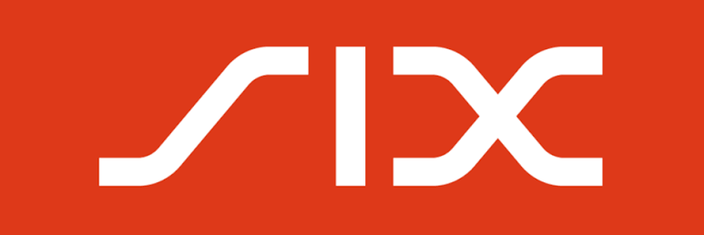

<!doctype html>
<html lang="de">
<head>
<meta charset="utf-8">
<meta name="viewport" content="width=device-width, initial-scale=1, viewport-fit=cover">
<style>:root{color-scheme:light;padding:env(safe-area-inset-top,0px) 0 env(safe-area-inset-bottom,0px)}body{margin:0}img{max-width:100%}[hidden]{display:none!important}</style>
<title>KTJ Companion für SIXplorer</title>
<script src="https://cdnjs.cloudflare.com/ajax/libs/three.js/r128/three.min.js"></script>
<script src="game-modules.js"></script>
<script>window.KTJ_MODE = 'six';</script>
<script src="arena.js"></script>
<meta name="claude:viewport-fit-sides" content="cover">
<link rel="stylesheet" href="https://fonts.googleapis.com/css2?family=Noto+Sans:wght@400;500;600;700&family=Noto+Serif:ital,wght@0,700;1,400&display=swap">
<style>
/* Layout: Demo-Leiste oben (ausserhalb des Produkts). SIXplorer = App im Handyformat links, Hinweise zur Demo rechts.
   Führungskraft und HR = linksbündige Dashboards. Farben und Schriften angelehnt an die SIX-Folien (Rot, Navy, Hellblau, Noto). */
:root{
  --ground:#E8E9EB; --surface:#FFFFFF; --surface-2:#F3F4F6; --line:#D6D9DD;
  --ink:#15191E; --body:#3A4048; --muted:#667079;
  --brand:#DE3919; --brand-strong:#D4210D; --brand-deep:#C20B03; --brand-ink:#C8230B; --on-brand:#FFFFFF;
  --navy:#002C5F; --navy-ink:#002C5F; --on-navy:#FFFFFF;
  --sky:#88C1E4; --sky-tint:#EAF4FA; --taupe:#A39C93;
  --ok:#1F7A4D; --ok-bg:#E3F3EA; --warn:#8A5A00; --warn-bg:#FFF1D6;
  --bar:#002C5F; --on-bar:#FFFFFF; --bar-soft:#1D4676; --bar-line:#5E7EA3;
  --frame:#15191E; --knob:#FFFFFF; --scrim:rgba(8,20,38,.5); --shadow:rgba(0,24,56,.38);
  --font-ui:"Noto Sans",system-ui,-apple-system,"Segoe UI",Roboto,Arial,sans-serif;
  --font-display:"Noto Serif",Georgia,"Times New Roman",serif;
}
@media (prefers-color-scheme: dark){ :root:not([data-theme="light"]){
  --ground:#0D1116; --surface:#171C22; --surface-2:#1F252C; --line:#303841;
  --ink:#F0F2F4; --body:#C7CDD4; --muted:#929BA6;
  --brand:#DE3919; --brand-strong:#D4210D; --brand-deep:#B80A02; --brand-ink:#FF8A73; --on-brand:#FFFFFF;
  --navy:#1B4A80; --navy-ink:#A9CDEE; --on-navy:#FFFFFF;
  --sky:#5FA6D3; --sky-tint:#15283A; --taupe:#8C867E;
  --ok:#6FD3A0; --ok-bg:#12301F; --warn:#F2C56B; --warn-bg:#3A2B08;
  --bar:#071B33; --on-bar:#FFFFFF; --bar-soft:#17335A; --bar-line:#4A678C;
  --frame:#2A313A; --knob:#E8ECF0; --scrim:rgba(0,0,0,.6); --shadow:rgba(0,0,0,.6);
  color-scheme:dark } }
:root[data-theme="dark"]{
  --ground:#0D1116; --surface:#171C22; --surface-2:#1F252C; --line:#303841;
  --ink:#F0F2F4; --body:#C7CDD4; --muted:#929BA6;
  --brand:#DE3919; --brand-strong:#D4210D; --brand-deep:#B80A02; --brand-ink:#FF8A73; --on-brand:#FFFFFF;
  --navy:#1B4A80; --navy-ink:#A9CDEE; --on-navy:#FFFFFF;
  --sky:#5FA6D3; --sky-tint:#15283A; --taupe:#8C867E;
  --ok:#6FD3A0; --ok-bg:#12301F; --warn:#F2C56B; --warn-bg:#3A2B08;
  --bar:#071B33; --on-bar:#FFFFFF; --bar-soft:#17335A; --bar-line:#4A678C;
  --frame:#2A313A; --knob:#E8ECF0; --scrim:rgba(0,0,0,.6); --shadow:rgba(0,0,0,.6);
  color-scheme:dark }

*{box-sizing:border-box}
body{margin:0;background:var(--ground);color:var(--body);font:14px/1.45 var(--font-ui);-webkit-font-smoothing:antialiased}
button,input,select,textarea{font:inherit;color:inherit}
button{cursor:pointer}
h1,h2,h3,p,ul,ol,dl,dd{margin:0}
ul,ol{padding:0;list-style:none}
:focus-visible{outline:2px solid var(--navy-ink);outline-offset:2px}
h1:focus{outline:none}
.ic{width:20px;height:20px;flex:none}
.gut{padding-left:max(16px,env(safe-area-inset-left,0px));padding-right:max(16px,env(safe-area-inset-right,0px))}

/* Demo-Leiste */
body::before{content:"";position:fixed;inset:0 0 auto;height:env(safe-area-inset-top,0px);z-index:40;background:var(--bar)}
.bar{position:sticky;top:env(safe-area-inset-top,0px);z-index:30;background:var(--bar);color:var(--on-bar)}
.bar-in{max-width:1240px;margin:0 auto;display:flex;align-items:center;flex-wrap:wrap;gap:10px 22px;padding-block:10px}
.brand{display:flex;align-items:center;gap:10px;font-weight:700;font-size:15px}
.brand-mark{width:28px;height:28px;border-radius:7px;background:var(--brand-strong);color:var(--on-brand);display:grid;place-items:center}
.brand small{display:block;font-weight:400;font-size:11.5px;opacity:.85}
.roles{display:flex;gap:2px;padding:3px;border-radius:9px;background:var(--bar-soft)}
.roles button{border:0;background:transparent;color:var(--on-bar);padding:7px 12px;border-radius:6px;font-weight:600;font-size:13px;display:flex;align-items:center;gap:7px;white-space:nowrap}
.roles button[aria-pressed="true"]{background:var(--surface);color:var(--ink)}
.badge{min-width:18px;height:18px;padding:0 5px;border-radius:9px;background:var(--brand-strong);color:var(--on-brand);font-size:11px;font-weight:700;display:inline-grid;place-items:center}
.bar-meta{margin-left:auto;display:flex;align-items:center;gap:12px;font-size:12px}
.bar-meta button{border:1px solid var(--bar-line);background:transparent;color:var(--on-bar);border-radius:6px;padding:6px 10px;font-weight:600;font-size:12px}

/* Bühne und Handyrahmen */
.stage{max-width:1240px;margin:0 auto;padding-block:26px 44px}
.six-wrap{display:grid;grid-template-columns:auto minmax(0,1fr);gap:44px;align-items:start}
.phone{width:392px;height:clamp(600px,calc(100vh - 128px),830px);background:var(--frame);border-radius:38px;padding:10px;box-shadow:0 22px 44px -20px var(--shadow)}
.screen{position:relative;height:100%;background:var(--ground);border-radius:28px;overflow:hidden;display:flex;flex-direction:column}
.scroll{flex:1;min-height:0;overflow-y:auto;overscroll-behavior:contain;padding-bottom:22px}
.tabs{flex:none;display:grid;grid-template-columns:repeat(5,minmax(0,1fr));background:var(--surface);border-top:1px solid var(--line);padding-inline:4px}
.tabs button{border:0;background:none;padding:8px 0 9px;display:grid;justify-items:center;gap:3px;font-size:10px;font-weight:600;color:var(--muted);min-width:0}
.tabs button[aria-current="page"]{color:var(--brand-ink)}
.tabs .ic{width:22px;height:22px}

/* App: Kopf, Abschnitte, Listen */
.top{background:var(--surface);border-bottom:1px solid var(--line);padding-block:14px 13px}
.top h1{font:700 22px/1.2 var(--font-display);color:var(--ink);text-wrap:balance}
.top .sub{margin-top:5px;color:var(--muted);font-size:13px}
.back{border:0;background:none;padding:0;margin:0 0 10px -4px;display:flex;align-items:center;gap:2px;font-weight:600;font-size:13px;color:var(--navy-ink)}
.logic{display:grid;grid-template-columns:repeat(3,minmax(0,1fr));gap:5px;margin-top:13px}
.logic span{padding-top:6px;border-top:3px solid var(--line);font-size:11.5px;font-weight:600;color:var(--muted)}
.logic span.on{border-top-color:var(--brand);color:var(--ink)}
.logic.base span{border-top-color:var(--navy-ink)}
.logic-note{margin-top:6px;font-size:12px;color:var(--muted)}
.sec{padding-top:20px}
.sec > h2{font:600 13px/1.3 var(--font-ui);color:var(--muted);margin-bottom:8px}
.panel{background:var(--surface);border:1px solid var(--line);border-radius:12px}
.panel.in{padding:14px}
.rows > *{display:block;padding:12px 14px;border-top:1px solid var(--line)}
.rows > *:first-child{border-top:0}
button.row{width:100%;text-align:left;background:none;border-left:0;border-right:0;border-bottom:0;display:flex;align-items:center;gap:12px}
.rows > button.row:first-child{border-top:0}
.row-main{flex:1;min-width:0}
.t{font-weight:600;color:var(--ink)}
.m{color:var(--muted);font-size:12.5px;margin-top:2px}
.chev{color:var(--muted)}
.stack{display:grid;gap:10px}
.inline{display:flex;flex-wrap:wrap;gap:6px 8px;align-items:center}
.note{display:flex;gap:10px;align-items:flex-start;background:var(--sky-tint);color:var(--navy-ink);border-radius:10px;padding:11px 12px;font-size:12.5px}
.note .ic{width:18px;height:18px;margin-top:1px}
.quote{font:italic 400 15px/1.5 var(--font-display);color:var(--ink)}
dl.kv{display:grid;gap:12px}
dl.kv dt{font-size:12px;color:var(--muted)}
dl.kv dd{color:var(--ink);margin-top:1px}

/* Status, Buttons, Formulare */
.pill{display:inline-flex;align-items:center;gap:5px;padding:3px 9px;border-radius:999px;border:1px solid transparent;font-size:12px;font-weight:600;white-space:nowrap}
.pill .ic{width:13px;height:13px}
.pill.ok{background:var(--ok-bg);color:var(--ok)}
.pill.warn{background:var(--warn-bg);color:var(--warn)}
.pill.info{background:var(--sky-tint);color:var(--navy-ink)}
.pill.neutral{background:var(--surface-2);border-color:var(--line);color:var(--body)}
.pill.open{border:1px dashed var(--muted);color:var(--body)}
.pill.solid{background:var(--navy);color:var(--on-navy)}
.btn{display:inline-flex;align-items:center;justify-content:center;gap:8px;min-height:42px;padding:9px 14px;border-radius:6px;border:1px solid transparent;font-weight:600;font-size:14px;text-align:center}
.btn.primary{background:var(--brand-strong);color:var(--on-brand)}
.btn.primary:hover{background:var(--brand-deep)}
.btn.ghost{background:var(--surface);border-color:var(--line);color:var(--ink)}
.btn.ghost:hover{border-color:var(--muted)}
.btn.block{width:100%}
.btn.small{min-height:34px;padding:5px 10px;font-size:13px}
.actions{display:flex;flex-wrap:wrap;gap:8px;margin-top:12px}
label.f,.f{display:block;margin:16px 0 6px;font-weight:600;font-size:13px;color:var(--ink)}
form > .f:first-child{margin-top:0}
textarea,select,input[type="text"]{width:100%;background:var(--surface);color:var(--ink);border:1px solid var(--line);border-radius:6px;padding:10px 12px}
textarea{min-height:86px;resize:vertical;display:block}
.hint{margin-top:6px;font-size:12.5px;color:var(--muted)}
.scale{display:grid;grid-template-columns:repeat(5,minmax(0,1fr));gap:6px}
.scale label{position:relative;display:block}
.scale input{position:absolute;inset:0;opacity:0;margin:0}
.scale span{display:grid;place-items:center;height:40px;border:1px solid var(--line);border-radius:6px;background:var(--surface);font-weight:600;color:var(--ink)}
.scale input:checked + span{background:var(--navy);border-color:var(--navy);color:var(--on-navy)}
.scale input:focus-visible + span{outline:2px solid var(--navy-ink);outline-offset:2px}
.scale-ends{display:flex;justify-content:space-between;margin-top:4px;font-size:12px;color:var(--muted)}
.switch{display:flex;gap:12px;align-items:flex-start;margin-top:18px}
.switch input{appearance:none;-webkit-appearance:none;flex:none;width:42px;height:24px;margin:0;border-radius:12px;background:var(--muted);position:relative;transition:background .15s}
.switch input::after{content:"";position:absolute;top:3px;left:3px;width:18px;height:18px;border-radius:50%;background:var(--knob);transition:transform .15s}
.switch input:checked{background:var(--navy)}
.switch input:checked::after{transform:translateX(18px)}
.seg{display:grid;grid-template-columns:repeat(2,minmax(0,1fr));gap:6px}
.seg button{min-height:40px;border:1px solid var(--line);background:var(--surface);border-radius:6px;font-weight:600;font-size:13px;color:var(--ink)}
.seg button[aria-pressed="true"]{background:var(--navy);border-color:var(--navy);color:var(--on-navy)}
.chips{display:flex;gap:6px;overflow-x:auto;padding-bottom:4px;margin-bottom:8px}
.chips button{flex:none;border:1px solid var(--line);background:var(--surface);border-radius:999px;padding:5px 11px;font-size:12.5px;font-weight:600;color:var(--body)}
.chips button[aria-pressed="true"]{background:var(--navy);border-color:var(--navy);color:var(--on-navy)}

/* Journey-Start */
.hero{background:var(--brand-strong);color:var(--on-brand);padding-block:16px 48px}
.hero .hi{display:flex;justify-content:space-between;align-items:center;font-size:13px}
.hero h1{font:700 27px/1.15 var(--font-display);margin-top:12px}
.hero p{font:italic 400 14.5px/1.4 var(--font-display);margin-top:3px}
.av{width:32px;height:32px;border-radius:50%;display:inline-grid;place-items:center;flex:none;background:var(--surface);color:var(--ink);font-size:12px;font-weight:700}
.av.sm{width:26px;height:26px;font-size:10.5px;background:var(--surface-2);border:1px solid var(--line)}
.lift{margin-top:-32px;position:relative}
.track{display:grid;grid-template-columns:repeat(16,minmax(0,1fr));gap:3px}
.track i{height:12px;border-radius:2px;opacity:.3}
.track i.done{opacity:1}
.track i.now{opacity:1;outline:2px solid var(--ink);outline-offset:2px}
.c0{background:var(--navy-ink)} .c1{background:var(--sky)} .c2{background:var(--taupe)} .c3{background:var(--brand)}
.track-ends{display:flex;justify-content:space-between;margin-top:7px;font-size:11.5px;color:var(--muted);font-variant-numeric:tabular-nums}
.sw{display:inline-block;width:10px;height:10px;border-radius:2px;margin-right:6px}
.linkbtn{border:0;background:none;padding:0;font-weight:600;font-size:13px;color:var(--navy-ink);text-decoration:underline;text-underline-offset:3px}
.num{width:26px;height:26px;border-radius:50%;flex:none;display:grid;place-items:center;border:1.5px solid var(--brand);color:var(--brand-ink);font-weight:700;font-size:13px}
.base-row{background:var(--sky-tint);border-radius:0 0 11px 11px}
.tl li{display:grid;grid-template-columns:18px minmax(0,1fr);gap:10px;padding:9px 0;border-top:1px solid var(--line)}
.tl li:first-child{border-top:0}
.dot{width:12px;height:12px;border-radius:50%;margin-top:4px;border:2px solid var(--muted)}
.dot.done{background:var(--muted)}
.dot.now{border-color:var(--brand);background:var(--brand)}
.figs{display:grid;grid-template-columns:repeat(4,minmax(0,1fr));gap:8px}
.figs b{display:block;font-size:20px;font-weight:600;color:var(--ink)}
.figs span{font-size:11.5px;color:var(--muted);line-height:1.3;display:block}
.steps{display:grid;grid-template-columns:repeat(4,minmax(0,1fr));gap:5px}
.steps li{padding-top:7px;border-top:3px solid var(--line);font-size:11.5px;color:var(--muted);font-weight:600}
.steps li.done{border-top-color:var(--muted)}
.steps li.now{border-top-color:var(--brand);color:var(--ink)}
.struck{text-decoration:line-through;text-decoration-color:var(--muted)}

/* Sheet und Toast */
.sheet-wrap{position:absolute;inset:0;z-index:25;background:var(--scrim);display:flex;align-items:flex-end}
.sheet{width:100%;max-height:92%;overflow-y:auto;background:var(--surface);border-radius:16px 16px 0 0;padding-block:16px 20px}
.sheet-head{display:flex;justify-content:space-between;align-items:flex-start;gap:12px;margin-bottom:12px}
.sheet h2{font:700 19px/1.25 var(--font-display);color:var(--ink)}
.x{border:0;background:var(--surface-2);width:32px;height:32px;border-radius:50%;display:grid;place-items:center;flex:none}
.toast{position:fixed;left:50%;bottom:calc(24px + env(safe-area-inset-bottom,0px));transform:translateX(-50%);z-index:60;max-width:min(92vw,460px);background:var(--ink);color:var(--surface);padding:11px 16px;border-radius:8px;font-weight:600;font-size:13.5px;box-shadow:0 10px 30px -10px var(--shadow)}

/* Hinweise zur Demo (nur breit) */
.guide{max-width:540px;padding-top:6px}
.guide h2{font:700 30px/1.15 var(--font-display);color:var(--ink);text-wrap:balance}
.guide .inline{margin:12px 0 14px}
.guide p{font-size:15px;line-height:1.55;max-width:58ch}
.guide h3{font:600 14px/1.3 var(--font-ui);color:var(--ink);margin:22px 0 8px}
.guide ol{counter-reset:g;display:grid;gap:8px}
.guide ol li{counter-increment:g;display:grid;grid-template-columns:24px minmax(0,1fr);gap:8px;font-size:14.5px;line-height:1.5}
.guide ol li::before{content:counter(g);font-weight:700;color:var(--brand-ink)}
.guide .foot{margin-top:26px;padding-top:14px;border-top:1px solid var(--line);font-size:12.5px;color:var(--muted)}

/* Dashboards */
.dash-head{margin-bottom:22px}
.dash-head h1{font:700 30px/1.15 var(--font-display);color:var(--ink);text-wrap:balance}
.dash-head p{margin-top:6px;font-size:15px;max-width:70ch}
.dash{display:grid;grid-template-columns:minmax(0,1.1fr) minmax(0,1fr);gap:22px;align-items:start}
.col{display:grid;gap:22px;min-width:0}
.card{background:var(--surface);border:1px solid var(--line);border-radius:12px;padding:18px 20px;min-width:0}
.card > h2{font:600 16px/1.3 var(--font-ui);color:var(--ink);margin-bottom:4px}
.card > .m{margin-bottom:10px}
.q{padding:14px 0;border-top:1px solid var(--line)}
.q:first-of-type{border-top:0}
.q .who{display:flex;align-items:center;gap:8px;font-size:12.5px;color:var(--muted);margin-bottom:6px}
.people{display:grid;grid-template-columns:repeat(2,minmax(0,1fr));gap:10px;margin-top:10px}
.person{text-align:left;background:var(--surface);border:1px solid var(--line);border-radius:10px;padding:12px;display:grid;gap:8px}
.person[aria-pressed="true"]{border-color:var(--navy-ink);box-shadow:inset 0 0 0 1px var(--navy-ink)}
.lrow{display:grid;grid-template-columns:150px minmax(0,1fr);gap:4px 14px;padding:11px 0;border-top:1px solid var(--line)}
.lrow:first-of-type{border-top:0}
.lrow .k{font-weight:600;color:var(--ink)}
.feed li{display:grid;grid-template-columns:64px minmax(0,1fr);gap:10px;padding:8px 0;border-top:1px solid var(--line);font-size:13.5px}
.feed li:first-child{border-top:0}
.feed time{color:var(--muted);font-variant-numeric:tabular-nums}
.banner{display:flex;gap:10px;align-items:flex-start;background:var(--warn-bg);color:var(--warn);border-radius:10px;padding:11px 14px;font-weight:600;font-size:13.5px;margin-bottom:22px}
.kpis{display:grid;grid-template-columns:repeat(3,minmax(0,1fr));gap:22px;margin-bottom:22px;align-items:start}
.tile{padding:13px 0;border-top:1px solid var(--line)}
.tile:first-of-type{border-top:0}
.tile .lab{font-size:13px;color:var(--body)}
.tile .val{font-size:26px;font-weight:600;color:var(--ink);line-height:1.2;margin-top:2px}
.tile .val small{font-size:14px;font-weight:500;color:var(--muted)}
.tile .val.later{font-size:14px;font-weight:500;color:var(--muted);line-height:1.45;margin-top:4px}
.tile .d{font-size:12.5px;color:var(--muted);margin-top:2px}
.hyp{font-size:12.5px;color:var(--muted);margin-bottom:6px}
.meters{display:grid;gap:0}
.meter{display:grid;grid-template-columns:minmax(0,1.3fr) minmax(0,1fr) 84px 108px;gap:14px;align-items:center;padding:12px 0;border-top:1px solid var(--line)}
.meter:first-child{border-top:0}
.mbar{height:8px;border-radius:4px;background:var(--sky-tint);overflow:hidden}
.mbar i{display:block;height:100%;border-radius:4px;background:var(--navy-ink)}
.meter .fig{font-variant-numeric:tabular-nums;color:var(--ink);font-weight:600;text-align:right}

@media (max-width:1020px){ .kpis{grid-template-columns:1fr} .dash{grid-template-columns:1fr} }
@media (max-width:899px){
  .bar-in{gap:10px} .brand{order:1;flex:1;min-width:0} .bar-meta{order:2;flex:none} .roles{order:3;width:100%} .roles button{flex:1;justify-content:center;padding:7px 6px}
  .stage.is-six{padding:0;max-width:none}
  .stage:not(.is-six){padding-left:max(16px,env(safe-area-inset-left,0px));padding-right:max(16px,env(safe-area-inset-right,0px))}
  .six-wrap{display:block}
  .guide{display:none}
  .phone{width:auto;height:auto;background:none;border-radius:0;padding:0;box-shadow:none}
  .screen{border-radius:0;overflow:visible;display:block;min-height:70vh}
  .scroll{overflow:visible;padding-bottom:96px}
  .tabs{position:fixed;left:0;right:0;bottom:0;z-index:20;padding-bottom:env(safe-area-inset-bottom,0px);padding-left:max(4px,env(safe-area-inset-left,0px));padding-right:max(4px,env(safe-area-inset-right,0px))}
  .sheet-wrap{position:fixed;z-index:50}
  .sheet{padding-bottom:calc(20px + env(safe-area-inset-bottom,0px))}
  .toast{bottom:calc(84px + env(safe-area-inset-bottom,0px))}
  .people{grid-template-columns:1fr}
  .lrow{grid-template-columns:1fr}
  .meter{grid-template-columns:minmax(0,1fr) 84px;row-gap:6px}
  .meter .mbar{grid-column:1 / -1;order:3}
  .meter .sig{grid-column:1 / -1;order:4}
  .dash-head h1{font-size:25px}
}
@media (min-width:900px){ .stage{padding-left:max(16px,env(safe-area-inset-left,0px));padding-right:max(16px,env(safe-area-inset-right,0px))} }
@media (prefers-reduced-motion: reduce){ *{transition:none !important} }

/* Hilfsklassen und Nachträge */
.blk{display:block}
.ink{color:var(--ink)}
.mt6{margin-top:6px}.mt10{margin-top:10px}.mt14{margin-top:14px}.mb8{margin-bottom:8px}
.fs{border:0;padding:0;margin:18px 0 0;min-width:0}
.fs legend.f{padding:0;margin:0 0 6px}
.opt{text-align:left;border:1px solid var(--line);background:var(--surface);border-radius:8px;padding:10px 12px}
.opt[aria-pressed="true"]{border-color:var(--navy-ink);box-shadow:inset 0 0 0 1px var(--navy-ink);background:var(--sky-tint)}
.num.nb{border:0;color:var(--navy-ink)}
.row .num{align-self:flex-start;margin-top:1px}
.card .figs{margin-top:12px}
/* Projekte: Achsen und Business Challenge */
.axis{display:grid;grid-template-columns:repeat(2,minmax(0,1fr));gap:6px}
.axis button{display:flex;align-items:center;justify-content:center;gap:6px;min-height:44px;border:1px solid var(--line);background:var(--surface);border-radius:8px;font-weight:600;font-size:13px;color:var(--ink);padding:6px}
.axis button .ic{width:18px;height:18px}
.axis button[aria-pressed="true"]{background:var(--navy);border-color:var(--navy);color:var(--on-navy)}
.bcbar{display:grid;grid-template-columns:repeat(6,minmax(0,1fr));gap:3px;margin-top:8px}
.bcbar i{height:6px;border-radius:3px;background:var(--line)}
.bcbar i.done{background:var(--muted)}
.bcbar i.now{background:var(--brand)}
/* Nur-SIXplorer-Modus */
.stage.solo .six-wrap{grid-template-columns:auto;justify-content:center}
/* Wochenleiste und Logo */
.week{display:grid;grid-template-columns:repeat(7,minmax(0,1fr));gap:4px}
.wday{border:1px solid var(--line);background:var(--surface);border-radius:10px;padding:6px 0 5px;display:grid;justify-items:center;gap:2px;color:var(--ink);min-width:0}
.wday .wdn{font-size:11px;color:var(--muted);font-weight:600}
.wday b{font-size:15px;font-variant-numeric:tabular-nums}
.wday.today b{color:var(--brand-ink)}
.wday .dots{display:flex;gap:3px;height:6px}
.wday .dots i{width:6px;height:6px;border-radius:50%}
.wday[aria-pressed="true"]{background:var(--navy);border-color:var(--navy);color:var(--on-navy)}
.wday[aria-pressed="true"] .wdn,.wday[aria-pressed="true"].today b{color:var(--on-navy)}
.wday[aria-pressed="true"] .dots i{box-shadow:0 0 0 1.5px var(--on-navy)}
.brand-logo{height:28px;width:auto;display:block;border-radius:4px}
.hi-l{display:flex;align-items:center;gap:10px}
.hero-logo{height:22px;width:auto;display:block;border-radius:3px;box-shadow:0 0 0 1px rgba(255,255,255,.35)}
/* Startseite */
.hero-row{display:flex;align-items:center;justify-content:space-between;gap:12px;margin-top:12px}
.hero .hero-row h1{margin-top:0}
.ring{position:relative;width:68px;height:68px;flex:none}
.ring svg{width:100%;height:100%;display:block}
.ring-bg{fill:none;stroke:var(--on-brand);stroke-opacity:.28;stroke-width:6}
.ring-fg{fill:none;stroke:var(--on-brand);stroke-width:6;stroke-linecap:round}
.ring-num{position:absolute;inset:0;display:flex;align-items:center;justify-content:center;font-weight:700;font-size:18px;color:var(--on-brand)}
.ring-num small{font-size:11px;font-weight:600}
.datebox{width:44px;flex:none;border-radius:8px;background:var(--sky-tint);color:var(--navy-ink);display:grid;justify-items:center;padding:6px 0;line-height:1.1}
.datebox b{font-size:18px}
.datebox span{font-size:11px;font-weight:600}
.stats{display:grid;grid-template-columns:repeat(3,minmax(0,1fr));gap:8px}
.stat{text-align:left;background:var(--surface);border:1px solid var(--line);border-radius:12px;padding:12px;display:grid;gap:3px;align-content:start;min-width:0}
.stat:hover{border-color:var(--muted)}
.stat b{font-size:22px;font-weight:600;color:var(--ink);line-height:1.15}
.stat span{font-size:11.5px;color:var(--muted);line-height:1.3}
/* Was andere dir zutrauen */
.trust{background:var(--surface);border:1px solid var(--line);border-radius:12px;padding:16px;display:grid;gap:12px}
.trust-h{display:flex;align-items:center;gap:10px}
.av.lg{width:40px;height:40px;font-size:13px;background:var(--navy);color:var(--on-navy)}
.avs-row{display:flex;align-items:center;gap:10px;margin-bottom:4px}
.avs{display:flex}
.avs .av{margin-left:-3px;box-shadow:0 0 0 2px var(--surface)}
.avs .av:first-child{margin-left:0}
.srow{display:grid;grid-template-columns:minmax(0,1fr) auto;gap:6px 10px;align-items:center;padding:9px 0 0}
.srow .fig{font-weight:600;color:var(--ink);font-variant-numeric:tabular-nums}
.srow .mbar{grid-column:1 / -1}
.stats .stat{cursor:default}
.wcard .av.sm{justify-self:start}
/* Entwicklungsplan */
.wizbar{display:grid;grid-template-columns:repeat(5,minmax(0,1fr));gap:4px}
.wizbar i{height:6px;border-radius:3px;background:var(--line)}
.wizbar i.done{background:var(--muted)}
.wizbar i.now{background:var(--brand)}
.wiznav{display:flex;gap:10px;padding-bottom:8px}
.wiznav .btn.primary{flex:1}
.num.ok{border-color:var(--ok);background:var(--ok-bg);color:var(--ok)}
.num .ic{width:15px;height:15px}
.ziel{display:flex;gap:12px;align-items:flex-start}
.ziel .btn{flex:none}
.zcheck{width:24px;height:24px;flex:none;border-radius:6px;border:2px solid var(--muted);background:var(--surface);display:grid;place-items:center;padding:0;color:var(--on-navy);margin-top:1px}
.zcheck[aria-pressed="true"]{background:var(--ok);border-color:var(--ok)}
.zcheck .ic{width:16px;height:16px}
/* Themenfelder */
.tchips{display:flex;flex-wrap:wrap;gap:6px}
.tchips button{border:1px solid var(--line);background:var(--surface);border-radius:999px;padding:7px 12px;font-size:13px;font-weight:600;color:var(--body)}
.tchips button[aria-pressed="true"]{background:var(--navy);border-color:var(--navy);color:var(--on-navy)}
/* Termin-Formular */
.segr{position:relative;display:block}
.segr input{position:absolute;inset:0;opacity:0;margin:0}
.segr span{display:grid;place-items:center;min-height:40px;border:1px solid var(--line);border-radius:6px;background:var(--surface);font-weight:600;font-size:13px;color:var(--ink)}
.segr input:checked + span{background:var(--navy);border-color:var(--navy);color:var(--on-navy)}
.segr input:focus-visible + span{outline:2px solid var(--navy-ink);outline-offset:2px}
/* Entwicklung: Weg, Kompetenzen, Wirkung */
.dirc-s{display:flex;align-items:center;gap:12px;padding:14px 16px}
.dirc-s .dirc-t{font-size:19px}
.dirc-s .dirc-a{margin-top:0;flex:none}
.weg{padding:2px 14px}
.weg-i{display:flex;gap:12px;align-items:flex-start;width:100%;text-align:left;background:none;border:0;padding:11px 0;position:relative;color:inherit}
.weg-i::before{content:"";position:absolute;left:6px;top:28px;bottom:-14px;width:2px;background:var(--line)}
.weg-i:last-child::before{display:none}
.weg-i .chev{align-self:center}
.weg-dot{width:14px;height:14px;border-radius:50%;flex:none;margin-top:16px;border:2px solid var(--muted);background:var(--surface);position:relative;z-index:1}
.weg-dot.done{background:var(--muted)}
.weg-dot.now{border-color:var(--brand);background:var(--brand);box-shadow:0 0 0 4px var(--surface),0 0 0 6px var(--brand)}
.weg-dot.goal{border-color:var(--navy-ink)}
.klegend{display:flex;flex-wrap:wrap;gap:4px 14px;font-size:12px;color:var(--muted);margin-bottom:6px}
.klegend i{display:inline-block;margin-right:6px;vertical-align:-1px}
.lg-h{width:14px;height:8px;border-radius:4px;background:var(--navy-ink)}
.lg-s{width:3px;height:12px;border-radius:2px;background:var(--surface);box-shadow:0 0 0 1.5px var(--muted)}
.lg-m{width:11px;height:11px;border-radius:50%;background:var(--surface);border:2.5px solid var(--brand)}
.kr{padding-top:12px}
.kr-h{display:flex;justify-content:space-between;align-items:baseline;gap:8px}
.kr-v{font-weight:600;color:var(--ink);font-variant-numeric:tabular-nums}
.ktrack{position:relative;height:10px;border-radius:5px;background:var(--sky-tint);margin:8px 0 5px}
.kfill{position:absolute;left:0;top:0;bottom:0;border-radius:5px;background:var(--navy-ink)}
.kstart{position:absolute;top:-3px;width:3px;height:16px;margin-left:-1.5px;border-radius:2px;background:var(--surface);box-shadow:0 0 0 1.5px var(--muted)}
.kmarc{position:absolute;top:-3px;width:16px;height:16px;margin-left:-8px;border-radius:50%;background:var(--surface);border:3px solid var(--brand)}
.kscale{display:flex;justify-content:space-between;margin-top:10px;font-size:11px;color:var(--muted);font-variant-numeric:tabular-nums}
.wstat{display:flex;align-items:baseline;gap:8px;margin-bottom:8px}
.wstat b{font-size:24px;font-weight:600;color:var(--ink)}
.wall{display:flex;gap:10px;overflow-x:auto;scroll-snap-type:x mandatory;padding-bottom:6px}
.wcard{flex:0 0 82%;scroll-snap-align:start;background:var(--surface);border:1px solid var(--line);border-radius:12px;padding:14px;display:grid;gap:10px;align-content:start;min-width:0}
.wcard.pend{border-style:dashed;background:transparent}
/* Richtung-Karte */
.dirc{width:100%;text-align:left;border:0;border-radius:12px;background:var(--navy);color:var(--on-navy);padding:16px;display:block}
.dirc-l{font-size:12.5px;font-weight:600;opacity:.8}
.dirc-t{font:700 22px/1.2 var(--font-display);margin-top:4px}
.dirc-f{font-size:13.5px;line-height:1.45;margin-top:8px;opacity:.92}
.dirc-a{display:inline-flex;align-items:center;gap:2px;margin-top:12px;font-weight:600;font-size:13px}
.dirc-a .ic{width:16px;height:16px}
/* Richtung */
.seg3{display:grid;grid-template-columns:repeat(3,minmax(0,1fr));gap:6px}
.seg3 button{min-height:40px;border:1px solid var(--line);background:var(--surface);border-radius:6px;font-weight:600;font-size:13px;color:var(--ink)}
.seg3 button[aria-pressed="true"]{background:var(--navy);border-color:var(--navy);color:var(--on-navy)}
.f0{font-weight:600;font-size:13px;color:var(--ink);margin-bottom:8px}
.evi{width:32px;height:32px;flex:none;border-radius:8px;background:var(--sky-tint);color:var(--navy-ink);display:grid;place-items:center;align-self:flex-start}
.evi .ic{width:18px;height:18px}
.vl li{display:grid;grid-template-columns:18px minmax(0,1fr);gap:10px;padding-bottom:16px;position:relative}
.vl li:last-child{padding-bottom:0}
.vl li::before{content:"";position:absolute;left:5px;top:18px;bottom:0;width:2px;background:var(--line)}
.vl li:last-child::before{display:none}
/* Vereinbarung */
.agree{display:grid;grid-template-columns:repeat(3,minmax(0,1fr));gap:8px}
.agree > div{background:var(--surface-2);border-radius:10px;padding:10px;display:grid;gap:4px;align-content:start;min-width:0}
.agree .ic{color:var(--navy-ink)}
.agree b{color:var(--ink);font-size:14px;font-weight:600;line-height:1.25}
.agree span{font-size:11.5px;color:var(--muted);line-height:1.3}
.agree-foot{display:flex;align-items:center;justify-content:space-between;gap:8px;margin-top:12px;font-size:12px;color:var(--muted)}
/* Kalender */
.cal-head{display:flex;align-items:center;justify-content:space-between;margin-bottom:8px}
.cal-head .t{font-size:15px}
.cal-nav{display:flex;gap:6px}
.cal-nav button{width:32px;height:32px;border:1px solid var(--line);background:var(--surface);border-radius:6px;display:grid;place-items:center;color:var(--ink);padding:0}
.cal-nav button:disabled{opacity:.35;cursor:default}
.cal{display:grid;grid-template-columns:repeat(7,minmax(0,1fr));gap:2px;text-align:center}
.cal .wd{font-size:11px;color:var(--muted);font-weight:600;padding:2px 0 4px}
.cal .day{border:0;background:none;height:40px;padding:0;border-radius:8px;display:grid;justify-items:center;align-content:center;gap:3px;font-size:13px;color:var(--ink);font-variant-numeric:tabular-nums}
.cal .day.past{color:var(--muted)}
.cal .day.today{color:var(--brand-ink);font-weight:700}
.cal .day[aria-pressed="true"]{background:var(--navy);color:var(--on-navy)}
.cal .dots{display:flex;gap:3px;height:6px}
.cal .dots i{width:6px;height:6px;border-radius:50%}
.cal .day[aria-pressed="true"] .dots i{box-shadow:0 0 0 1.5px var(--on-navy)}
.d-ok{background:var(--ok)} .d-warn{background:var(--warn)} .d-ersatz{background:var(--navy-ink)} .d-transfer{background:var(--muted)}
.cal-legend{display:flex;flex-wrap:wrap;gap:4px 14px;margin-top:10px;font-size:12px;color:var(--muted)}
.cal-legend i{display:inline-block;width:7px;height:7px;border-radius:50%;margin-right:6px}
.cal-day{margin-top:12px;padding-top:12px;border-top:1px solid var(--line);display:grid;gap:10px}
</style>

</head>
<body>
<div class="bar"><div class="bar-in gut" id="bar"></div></div>
<main class="stage" id="stage"></main>
<div class="toast" id="toast" role="status" aria-live="polite" hidden></div>
<script>
(function(){
'use strict';
var VERSION = 7, S, lastKey = '', toastTimer;
var esc = function(s){ return String(s == null ? '' : s).replace(/[&<>"']/g, function(c){ return {'&':'&amp;','<':'&lt;','>':'&gt;','"':'&quot;',"'":'&#39;'}[c]; }); };
var PATHS = {
  journey:'<circle cx="5" cy="18" r="2"/><circle cx="12" cy="11" r="2"/><circle cx="19" cy="5" r="2"/><path d="M6.4 16.6l4.2-4.2M13.5 9.6l4.1-3.3"/>',
  zeit:'<circle cx="12" cy="12" r="8.5"/><path d="M12 7.5V12l3 2"/>',
  projekte:'<circle cx="12" cy="12" r="8.5"/><path d="M15.4 8.6l-1.9 4.9-4.9 1.9 1.9-4.9z"/>',
  reflexion:'<path d="M5 5h14a1 1 0 0 1 1 1v9a1 1 0 0 1-1 1h-7l-4 3.5V16H5a1 1 0 0 1-1-1V6a1 1 0 0 1 1-1z"/>',
  entwicklung:'<path d="M6 21V4M6 5h11l-2.5 3.5L17 12H6"/>',
  chev:'<path d="M9 6l6 6-6 6"/>', back:'<path d="M15 6l-6 6 6 6"/>', check:'<path d="M5 12.5l5 5L19 7"/>',
  lock:'<rect x="6" y="11" width="12" height="9" rx="2"/><path d="M9 11V8a3 3 0 0 1 6 0v3"/>',
  eye:'<path d="M2.5 12s3.5-6.5 9.5-6.5 9.5 6.5 9.5 6.5-3.5 6.5-9.5 6.5S2.5 12 2.5 12z"/><circle cx="12" cy="12" r="2.8"/>',
  cal:'<rect x="4" y="5.5" width="16" height="14" rx="2"/><path d="M4 10h16M8.5 3.5v4M15.5 3.5v4"/>', person:'<circle cx="12" cy="8" r="3.5"/><path d="M5 20c1.2-3.6 3.8-5.5 7-5.5s5.8 1.9 7 5.5"/>',
  hor:'<path d="M4 12h16M7.5 8.5L4 12l3.5 3.5M16.5 8.5L20 12l-3.5 3.5"/>', ver:'<path d="M12 4v16M8.5 7.5L12 4l3.5 3.5M8.5 16.5L12 20l3.5-3.5"/>',
  x:'<path d="M6 6l12 12M18 6L6 18"/>', info:'<circle cx="12" cy="12" r="8.5"/><path d="M12 11v5M12 8v.2"/>'
};
function ic(n){ return '<svg class="ic" viewBox="0 0 24 24" fill="none" stroke="currentColor" stroke-width="1.8" stroke-linecap="round" stroke-linejoin="round" aria-hidden="true">' + PATHS[n] + '</svg>'; }
function pill(kind, text, icon){ return '<span class="pill ' + kind + '">' + (icon ? ic(icon) : '') + esc(text) + '</span>'; }

var TABS = [['journey','Journey','journey'],['lernzeit','Lernzeit','zeit'],['projekte','Projekte','projekte'],['reflexion','Reflexion','reflexion'],['entwicklung','Entwicklung','entwicklung']];
var ROLES = [['six','SIXplorer','sixplorer'],['lm','Führungskraft','fuehrungskraft'],['hr','HR','hr']];
var PHASES = [
  {n:'Kick-off', m:[1,1], c:'c0', d:'Start of the Journey'},
  {n:'Self-Leadership', m:[2,6], c:'c1', d:'Connecting with Oneself'},
  {n:'People Leadership', m:[7,11], c:'c2', d:'Connecting with People and Team'},
  {n:'Business & Network Leadership', m:[12,16], c:'c3', d:'Connecting with Customers and Partners'}
];
var MONAT = 13;
var MEILEN = [
  ['done','Vor dem Start','Lernzeit mit Marc verbindlich vereinbart'],
  ['done','Monat 1','Kick-off Call und zweitägiger Start-Event'],
  ['done','Monat 2 bis 6','Self-Leadership: Labs 1 bis 4, dazu fünf Monate Einzelcoaching'],
  ['done','Monat 7 bis 11','People Leadership: Labs 5 bis 8, Einsatz über das Project Board'],
  ['done','Monat 12','Standortgespräch zur Entwicklungsrichtung'],
  ['now','Monat 12 bis 16','Business & Network Leadership: Labs 9 bis 12 und Business Challenge'],
  ['next','Monat 16','Anschlusserfahrung vereinbaren, Schluss-Event'],
  ['next','Danach','Check-ins nach 3 und 6 Monaten']
];
var PROJ = {
  onb:{t:'Onboarding neuer Datenkunden verstehen', bu:'Financial Information', ort:'Zürich', w:4, p:15, wer:'Sofia Marín'},
  listing:{t:'Listing-Erlebnis für mittelgrosse Unternehmen', bu:'Exchanges', ort:'Zürich', w:5, p:10, wer:'Claire Dubois',
    aufgabe:'Begleite das Listing-Team, sprich mit drei kürzlich kotierten Unternehmen und zeige, wo der Weg an die Börse unnötig schwer ist.',
    offen:'Niemand weiss bisher, an welcher Stelle Unternehmen wirklich abspringen.',
    ergebnis:'Kurzbericht mit drei konkreten Vorschlägen, vorgestellt im Listing-Team.',
    fremd:'Du arbeitest mit Emittenten statt mit Banken und siehst SIX von der Marktseite.',
    mit:'Neugier, strukturiertes Arbeiten, Deutsch und Englisch.', start:'Mo, 7. Dez.'},
  anleger:{t:'Pilot zur Anlegerbildung testen', bu:'Exchanges', ort:'Madrid, remote möglich', w:6, p:10, wer:'Javier Ortega',
    aufgabe:'Teste mit dem Team in Madrid ein neues Format, das Privatanlegern den Börsenhandel erklärt, und werte aus, was ankommt.',
    offen:'Ob das Format überhaupt die Richtigen erreicht, ist unklar.',
    ergebnis:'Auswertung des Piloten mit einer Empfehlung: weiterführen, anpassen oder stoppen.',
    fremd:'Anderer Standort, andere Sprache, Privatkunden statt institutionelle Kunden.',
    mit:'Englisch, Freude an Auswertungen. Spanisch hilft, ist aber nicht nötig.', start:'Mo, 11. Jan.'},
  ebill:{t:'eBill aus Sicht von KMU', bu:'Banking Services', ort:'Zürich', w:3, p:20, wer:'Nina Graf',
    aufgabe:'Führe zehn Gespräche mit kleinen Unternehmen und finde heraus, warum sie eBill nutzen oder nicht.',
    offen:'Bisher kennt das Team nur die Sicht der Banken, nicht die der Unternehmen.',
    ergebnis:'Zehn Gesprächsprotokolle und eine Seite mit den drei wichtigsten Hürden.',
    fremd:'Du sprichst mit Endkunden, die SIX kaum kennen.',
    mit:'Gesprächsführung, Deutsch. Französisch ist ein Plus.', start:'Mo, 30. Nov.'},
  esg:{t:'ESG-Daten: Wo verlieren Asset Manager das Vertrauen?', bu:'Financial Information', ort:'Zürich', w:4, p:15, wer:'Daniel Roth',
    aufgabe:'Analysiere Kundenrückfragen zu ESG-Daten und sprich mit fünf Nutzern darüber, wann sie den Daten misstrauen.',
    offen:'Das Team vermutet Lücken in der Abdeckung. Belegt ist das nicht.',
    ergebnis:'Muster der häufigsten Zweifel und ein Vorschlag, wie das Team darauf reagiert.',
    fremd:'Datenprodukt statt Abwicklung, Kunden auf der Buy-Side.',
    mit:'Analytisches Arbeiten, Englisch.', start:'Mo, 14. Dez.'},
  ki:{t:'Interner KI-Assistent: Wer würde ihn wirklich nutzen?', bu:'IT', ort:'Warschau, remote', w:2, p:20, wer:'Pawel Zielinski',
    aufgabe:'Befrage zwölf Mitarbeitende aus drei Bereichen und prüfe, wofür sie einen internen KI-Assistenten nutzen würden.',
    offen:'Das Produktteam hat zwanzig Ideen und keine Reihenfolge.',
    ergebnis:'Entscheidungsgrundlage für das Produktteam: drei Anwendungsfälle mit Priorität.',
    fremd:'Produktentwicklung in der IT, Team an einem anderen Standort.',
    mit:'Englisch, Interesse an Technologie. Programmieren ist nicht nötig.', start:'Mo, 30. Nov.'}
};
var BOARD = ['listing','anleger','ebill','esg','ki'];
var INTERVIEWS = ['Interview 1: Leiterin Zahlungsverkehr, Kantonalbank','Interview 2: COO, Regionalbank','Interview 3: CFO, Maschinenbau-KMU','Interview 4: Produktmanager, Privatbank','Interview 5: Leiter Zahlungsverkehr, Regionalbank','Interview 6: Risk Officer, Kantonalbank'];
var TEAM = [['LB','Lena Baumann'],['MR','Mateo Ruiz'],['ZK','Zofia Kowalska'],['DM','David Meier'],['AD','Aylin Demir']];
var BC_TITEL = 'Instant Payments für kleine Banken';
var FRAGE = 'Warum bieten kleine Banken ihren Firmenkunden Instant Payments nur zögerlich an, und was kann SIX dazu beitragen?';
var SLOT_OPT = ['Mi, 25. Nov. | 9–11 Uhr','Do, 26. Nov. | 14–16 Uhr','Mo, 30. Nov. | 9–12 Uhr','Mi, 2. Dez. | 13–16 Uhr'];
var ALT_OPT = ['Mi, 2. Dez. | 9–12 Uhr','Do, 3. Dez. | 13–16 Uhr','Fr, 4. Dez. | 9–12 Uhr'];
var SCALES = [['sinn','Diese Erfahrung hat mir geholfen, den Sinn meines Beitrags zu sehen.'],['rolle','Ich verstehe meine Rolle bei SIX klarer als vorher.']];

function seed(){ var st = {
  v:VERSION, role:'six', tab:'journey', stack:[], sheet:null, filter:'Alle', timeline:false, lmSel:'lena', lmForm:null, n:100, calM:0, calSel:'2026-11-20', projAxis:'h',
  slots:[
    {id:'s3', zweck:'Fokuszeit: Reflexion und Coaching-Vorbereitung', datum:'Fr, 20. Nov.', zeit:'9–11 Uhr', status:'ersatz', ersatz:{datum:'Mo, 23. Nov.', zeit:'9–11 Uhr', grund:'Am Freitag ist Quartalsabschluss.'}},
    {id:'s2', zweck:'Business Challenge: Prämissen im Team prüfen', datum:'Di, 1. Dez.', zeit:'9–12 Uhr', status:'angefragt'},
    {id:'s1', zweck:'Lab 11', datum:'Do, 17. Dez.', zeit:'14–18 Uhr', status:'bestaetigt'}
  ],
  transfer:[{id:'t1', lab:'Lab 10: Understanding Customers', termin:'Fr, 20. Nov.', status:'geplant'}],
  hindernisse:[{text:'Monatsabschluss kollidiert mit Lab-Terminen', n:2}],
  einsaetze:[{pid:'onb', status:'abgeschlossen', ziel:'Herausfinden, ob mir die Arbeit direkt mit Kunden liegt.',
    erfahrung:'Ich hatte angenommen, Kunden wollen vor allem ein schnelleres Onboarding. In den Gesprächen ging es fast nie um Tempo, sondern um zu viele Übergaben. Ich habe gemerkt, dass ich auch in meinem eigenen Job auf die falsche Grösse optimiere.'}],
  praemissen:[
    {id:'p1', text:'Kleine Banken zögern, weil die technische Anbindung zu teuer ist.', status:'widerlegt',
      heute:'Die Technik ist gelöst. Es fehlt die Antwort auf die Frage, was Firmenkunden davon haben.',
      warum:'Wir haben von uns auf die Banken geschlossen: Bei uns intern ist die IT oft der Engpass.',
      erk:[[1,'Die Anbindung hat unser Kernbankenanbieter gemacht. Die Kosten waren nicht das Thema.'],[4,'Technisch sind wir seit einem Jahr bereit.']],
      kom:[['Mateo Ruiz','Das hat mich am meisten überrascht. Ich hätte darauf gewettet.']]},
    {id:'p2', text:'Firmenkunden fragen Instant Payments gar nicht nach.', status:'angepasst',
      heute:'Firmenkunden fragen nach dem Nutzen, nicht nach dem Produktnamen.', warum:'',
      erk:[[2,'Niemand fragt nach Instant Payments. Sie fragen, warum eine Lieferantenzahlung am Freitagabend nicht mehr rausgeht.']], kom:[]},
    {id:'p3', text:'Banken sehen Instant Payments als Pflicht und nicht als Produkt.', status:'bestaetigt', heute:'', warum:'',
      erk:[[0,'Wir haben es eingeführt, weil wir mussten.'],[3,'Ein Preisschild dafür haben wir bis heute nicht.']], kom:[]},
    {id:'p4', text:'Betrugsrisiken sind der Hauptgrund für tiefe Limiten.', status:'offen', heute:'', warum:'',
      erk:[[1,'Betrug ist das Erste, wonach unser Risk Officer fragt.'],[5,'Die Limite ist historisch. Hinterfragt hat sie nie jemand.']],
      kom:[['Zofia Kowalska','Die beiden Aussagen widersprechen sich. Wir brauchen ein drittes Gespräch.']],
      sponsor:'Was müsstet ihr sehen, um diese Annahme aufzugeben?'},
    {id:'p5', text:'Kleine Banken sehen SIX als Infrastruktur und nicht als Partner für Produktideen.', status:'offen', heute:'', warum:'', erk:[], kom:[]},
    {id:'p6', text:'Mehr technische Dokumentation würde die Einführung beschleunigen.', status:'widerlegt',
      heute:'Den Banken fehlt kein Handbuch, sondern ein Beispiel aus der Praxis.', warum:'',
      erk:[[4,'Dokumentation haben wir genug. Uns fehlt ein Beispiel, wie eine andere Bank das ihren Kunden verkauft.']], kom:[]}
  ],
  offen:[
    {id:'r1', titel:'Nach Lab 10: Understanding Customers', faellig:'bis Fr, 20. Nov.', fragen:['Welche deiner Annahmen über unsere Kunden hat das Lab ins Wanken gebracht?','Was probierst du in den nächsten zwei Wochen in deinem Team aus?']},
    {id:'r2', titel:'Nach dem Coaching Exchange', faellig:'bis Mi, 25. Nov.', fragen:['Was hast du aus dem Austausch mitgenommen, das dir allein nicht eingefallen wäre?','Was heisst das für deinen nächsten Schritt?']}
  ],
  journal:[
    {id:'j1', titel:'Nach dem Einsatz: Onboarding neuer Datenkunden', datum:'30. Okt.', geteilt:true, sinn:5, rolle:4,
      qa:[['Welche Erfahrung hat deine bisherige Sicht am meisten herausgefordert?','Ich hatte angenommen, Kunden wollen vor allem ein schnelleres Onboarding. In den Gesprächen ging es fast nie um Tempo, sondern um zu viele Übergaben. Ich habe gemerkt, dass ich auch in meinem eigenen Job auf die falsche Grösse optimiere.'],['Was heisst das für deine Rolle bei SIX?','Ich will näher an die Kunden. Die Abwicklung verstehe ich, den Grund dahinter noch zu wenig.']]},
    {id:'j2', titel:'Nach Lab 9: Me and My Skills', datum:'16. Okt.', geteilt:false, sinn:4, rolle:4,
      qa:[['Was hat das Lab an deinem Bild von dir selbst verändert?','Meine Stärke ist Struktur. Im Lab wurde mir klar, dass ich sie oft nutze, um Unsicherheit zu vermeiden.']]},
    {id:'j3', titel:'Nach dem Gespräch mit meinem Coach', datum:'2. Okt.', geteilt:false, sinn:3, rolle:4,
      qa:[['Was nimmst du mit?','Ich sage zu schnell Ja. Bis zum nächsten Gespräch übe ich, einmal pro Woche eine Anfrage abzulehnen.']]},
    {id:'j4', titel:'Nach Lab 8: Zusammenarbeit im Team', datum:'11. Sept.', geteilt:false, sinn:4, rolle:3,
      qa:[['Welche Annahme über Teamarbeit hast du hinterfragt?','Dass Einigkeit ein Zeichen für ein gutes Team ist. Unser bestes Ergebnis kam nach dem grössten Streit.']]}
  ],
  plan:{ richtung:'fach', notiz:'Kundenerlebnis und Daten. Führung schliesse ich nicht aus, ich will aber zuerst fachlich tiefer gehen.',
    anschluss:{status:'entwurf', titel:'Übergaben im eigenen Kunden-Onboarding neu gestalten', ergebnis:'Getesteter neuer Ablauf für ein Kundensegment, vorgestellt im Führungsteam Client Operations', nutzer:'Team Client Operations, Marc Steiner', bis:'Ende April', lm:''},
    log:[['9. Nov.','Zwei Kolleginnen aus dem Onboarding für das Vorhaben gewonnen.']], wirkung:false, kontakte:{}, termine:{}, themen:['kunden','daten'], seen:{}, marc:{}, ziele:[{id:'z1', text:'Business & Network Leadership stärken: zwei Kundengespräche pro Monat begleiten', bis:'Ende Januar', done:false}] },
  feed:[['12. Nov.','Lab 10 besucht: Understanding Customers'],['10. Nov.','Eine Prämisse in der Business Challenge geprüft'],['2. Nov.','Standortgespräch geführt, Richtung: Fachperspektive'],['30. Okt.','Reflexion zum Einsatz abgeschlossen und mit dir geteilt'],['30. Okt.','Wirkungsgespräch mit Sofia Marín geführt'],['16. Okt.','Reflexion nach Lab 9 abgeschlossen (privat)']],
  tomasz:{kap:'angefragt'}
}; hook('seed', st); return st; }

/* ---------- Bausteine ---------- */
function cur(){ return S.stack.length ? S.stack[S.stack.length - 1] : {s:S.tab}; }
function find(list, key, val){ for (var i = 0; i < list.length; i++) if (list[i][key] === val) return list[i]; return null; }
function count(list, fn){ return list.filter(fn).length; }
function logic(step){
  var L = ['Auslösen','Bearbeiten','Verankern'];
  var h = '<div class="logic' + (step === 0 ? ' base' : '') + '">' + L.map(function(l, i){ return '<span' + (step === i + 1 ? ' class="on"' : '') + '>' + (i + 1) + ' ' + l + '</span>'; }).join('') + '</div>';
  return h + (step === 0 ? '<p class="logic-note">Fundament für alle drei Schritte</p>' : '');
}
function top(title, sub, step, back){
  return '<header class="top gut">' + (back ? '<button class="back" data-a="back">' + ic('back') + 'Zurück</button>' : '') + '<h1 tabindex="-1">' + esc(title) + '</h1>' + (sub ? '<p class="sub">' + esc(sub) + '</p>' : '') + (step != null ? logic(step) : '') + '</header>';
}
function sec(title, inner){ return '<section class="sec gut">' + (title ? '<h2>' + esc(title) + '</h2>' : '') + inner + '</section>'; }
function row(a, v, id, title, meta, extra, lead){
  return '<button class="row" data-a="' + a + '" data-v="' + v + '"' + (id ? ' data-id="' + id + '"' : '') + '>' + (lead || '') + '<span class="row-main"><span class="t blk">' + esc(title) + '</span>' + (meta ? '<span class="m blk">' + esc(meta) + '</span>' : '') + (extra || '') + '</span><span class="chev">' + ic('chev') + '</span></button>';
}
function kv(pairs){ return '<dl class="kv">' + pairs.map(function(p){ return '<div><dt>' + esc(p[0]) + '</dt><dd>' + esc(p[1]) + '</dd></div>'; }).join('') + '</dl>'; }
function slotPill(s){ return s.status === 'bestaetigt' ? pill('ok','Bestätigt','check') : s.status === 'angefragt' ? pill('warn','Angefragt bei Marc') : pill('info','Ersatztermin vorgeschlagen'); }
function einsatzPill(e){ return e.status === 'abgeschlossen' ? pill('neutral','Abgeschlossen','check') : e.status === 'bestaetigt' ? pill('ok','Kapazität bestätigt','check') : pill('warn','Kapazität angefragt'); }
function prPill(st){ return st === 'offen' ? pill('open','Offen') : st === 'bestaetigt' ? pill('neutral','Bestätigt','check') : st === 'angepasst' ? pill('info','Angepasst') : pill('solid','Widerlegt'); }
function anschlussPill(st){ return st === 'vereinbart' ? pill('ok','Vereinbart','check') : st === 'gesendet' ? pill('warn','Liegt bei Marc') : pill('neutral','Entwurf'); }
function umfang(p){ return p.w + ' Wochen, ' + p.p + ' % deiner Arbeitszeit'; }

/* ---------- SIXplorer: Journey ---------- */
function homeTasks(){
  var t = [];
  if (S.offen.length) t.push(['go','schreiben',S.offen[0].id,S.offen[0].titel,'Reflexion offen, ' + S.offen[0].faellig]);
  S.slots.forEach(function(s){ if (s.status === 'ersatz') t.push(['tab','lernzeit','','Marc schlägt einen Ersatztermin vor',s.ersatz.datum + ', ' + s.ersatz.zeit]); });
  var o = count(S.praemissen, function(p){ return p.status === 'offen'; });
  if (o) t.push(['go','challenge','','Business Challenge: ' + o + (o === 1 ? ' Prämisse' : ' Prämissen') + ' noch offen','Schritt 4 von 6, Präsentation am 28. Jan.']);
  if (S.plan.anschluss.status === 'entwurf') t.push(['go','anschluss','','Anschlusserfahrung fertigstellen','Der Entwurf liegt noch nicht bei Marc']);
  S.einsaetze.forEach(function(e){ if (e.status === 'bestaetigt') t.push(['go','einsatz',e.pid,'Einsatz bestätigt: ' + PROJ[e.pid].t,'Start am ' + PROJ[e.pid].start]); });
  hook('homeTasks', t);
  return t;
}
function timeline(){
  return '<ul class="tl mt10">' + MEILEN.map(function(x){ return '<li><span class="dot ' + x[0] + '"></span><span><span class="t blk">' + x[1] + '</span><span class="m blk">' + x[2] + '</span></span></li>'; }).join('') + '</ul>';
}
function scrJourney(){
  var ph = PHASES[3], cells = '', m, p, pct = Math.round(MONAT / 16 * 100);
  for (m = 1; m <= 16; m++){
    p = PHASES.filter(function(x){ return m >= x.m[0] && m <= x.m[1]; })[0];
    cells += '<i class="' + p.c + (m < MONAT ? ' done' : m === MONAT ? ' now' : '') + '"></i>';
  }
  var tasks = homeTasks();
  var done = count(S.einsaetze, function(e){ return e.status === 'abgeschlossen'; });
  var refl = 8 + S.journal.length, gepr = count(S.praemissen, function(x){ return x.status !== 'offen'; });
  var C = 2 * Math.PI * 26, off = C * (1 - pct / 100);
  var ring = '<div class="ring" role="img" aria-label="' + pct + ' Prozent der Journey geschafft"><svg viewBox="0 0 64 64" aria-hidden="true"><circle cx="32" cy="32" r="26" class="ring-bg"/><circle cx="32" cy="32" r="26" class="ring-fg" stroke-dasharray="' + C.toFixed(1) + '" stroke-dashoffset="' + off.toFixed(1) + '" transform="rotate(-90 32 32)"/></svg><span class="ring-num" aria-hidden="true">' + pct + '<small>&nbsp;%</small></span></div>';
  var h = '<div class="hero gut"><div class="hi"><span class="hi-l">' + (LOGO ? '' : '') + '<span>Montag, 16. November</span></span><span class="av">LB</span></div><div class="hero-row"><div><h1 tabindex="-1">Hallo Lena</h1><p>Monat ' + MONAT + ' von 16 deiner Key Talent Journey</p></div>' + ring + '</div></div>';
  h += '<div class="gut lift"><div class="panel in"><div class="track" role="img" aria-label="Monat 13 von 16, Phase Business und Network Leadership">' + cells + '</div>'
    + '<div class="track-ends"><span>Monat 1</span><span>Monat 16</span></div>'
    + '<p class="mt14"><span class="sw ' + ph.c + '"></span><span class="t">' + esc(ph.n) + '</span></p><p class="m">' + esc(ph.d) + '</p>'
    + '<p class="mt10"><button class="linkbtn" data-a="timeline">' + (S.timeline ? 'Überblick schliessen' : 'Ganze Journey ansehen') + '</button></p>'
    + (S.timeline ? timeline() : '') + '</div></div>';
  h += weekHTML();
  h += sec('Als Nächstes', tasks.length ? '<div class="panel rows">' + tasks.map(function(t){ return row(t[0], t[1], t[2], t[3], t[4]); }).join('') + '</div>' : '<div class="panel in">Alles erledigt. Neue Aufgaben erscheinen hier.</div>');
  var st = [['projekte', done, done === 1 ? 'Einsatz abgeschlossen' : 'Einsätze abgeschlossen'], ['reflexion', refl, 'Reflexionen geschrieben'], ['challenge', gepr + '/' + S.praemissen.length, 'Prämissen geprüft']];
  h += sec('Dein Stand', '<div class="stats">' + st.map(function(x){ return '<button class="stat" data-a="' + (x[0] === 'challenge' ? 'go' : 'tab') + '" data-v="' + x[0] + '"><b>' + x[1] + '</b><span>' + x[2] + '</span></button>'; }).join('') + '</div>');
  return h;
}

/* ---------- SIXplorer: Kalender ---------- */
var CAL_M = [[2026,11,'November 2026'],[2026,12,'Dezember 2026'],[2027,1,'Januar 2027']];
var MON = {Nov:[2026,11], Dez:[2026,12], Jan:[2027,1]}, MON_NAME = {11:'November', 12:'Dezember', 1:'Januar'}, TODAY = '2026-11-16';
function pad(n){ return (n < 10 ? '0' : '') + n; }
function dkey(str){ var m = /(\d+)\.\s*(Nov|Dez|Jan)/.exec(str || ''); if (!m) return null; var mo = MON[m[2]]; return mo[0] + '-' + pad(mo[1]) + '-' + pad(+m[1]); }
function calEvents(){
  var ev = [];
  S.slots.forEach(function(s){ ev.push(s.status === 'ersatz' ? {k:dkey(s.ersatz.datum), t:s.zweck, z:s.ersatz.zeit, st:'ersatz'} : {k:dkey(s.datum), t:s.zweck, z:s.zeit, st:s.status}); });
  S.transfer.forEach(function(t){ ev.push({k:dkey(t.termin), t:'Transfergespräch nach ' + t.lab, z:'15 Minuten mit Marc', st:'transfer'}); });
  Object.keys(S.plan.marc || {}).forEach(function(k){ var m = S.plan.marc[k]; ev.push({k:dkey(m.datum), t:'Mit Marc: ' + MARC_T[k][0], z:m.zeit + ', ' + m.format, st:m.status === 'bestaetigt' ? 'bestaetigt' : 'angefragt'}); });
  Object.keys(S.plan.termine || {}).forEach(function(id){ var t = S.plan.termine[id]; ev.push({k:dkey(t.datum), t:'Vorstellung: ' + t.abt, z:t.zeit + ', ' + t.format, st:'angefragt'}); });
  ev.push({k:'2026-11-18', t:'Leadership Talk mit dem People Board', z:'17–18 Uhr, online', st:'bestaetigt'});
  ev.push({k:'2027-01-21', t:'Lab 12', z:'14–18 Uhr', st:'bestaetigt'});
  ev.push({k:'2027-01-28', t:'Business Challenge: Präsentation vor der Geschäftsleitung', z:'10–11 Uhr', st:'bestaetigt'});
  return ev.filter(function(e){ return e.k; });
}
var EV_PILL = {bestaetigt:['ok','Bestätigt'], angefragt:['warn','Angefragt bei Marc'], ersatz:['info','Ersatztermin vorgeschlagen'], transfer:['neutral','Transfergespräch']};
var EV_DOT = {bestaetigt:'d-ok', angefragt:'d-warn', ersatz:'d-ersatz', transfer:'d-transfer'};
function calInner(){
  var cm = CAL_M[S.calM], y = cm[0], m = cm[1], by = {}, d, k, e, i;
  calEvents().forEach(function(x){ (by[x.k] = by[x.k] || []).push(x); });
  var first = (new Date(y, m - 1, 1).getDay() + 6) % 7, days = new Date(y, m, 0).getDate();
  var g = ['Mo','Di','Mi','Do','Fr','Sa','So'].map(function(w){ return '<span class="wd" aria-hidden="true">' + w + '</span>'; }).join('');
  for (i = 0; i < first; i++) g += '<span></span>';
  for (d = 1; d <= days; d++){
    k = y + '-' + pad(m) + '-' + pad(d); e = by[k] || [];
    g += '<button class="day' + (k < TODAY ? ' past' : '') + (k === TODAY ? ' today' : '') + '" data-a="cal-d" data-v="' + k + '" aria-pressed="' + (S.calSel === k) + '" aria-label="' + d + '. ' + MON_NAME[m] + (e.length ? ', ' + e.length + (e.length === 1 ? ' Termin' : ' Termine') : '') + '"><span>' + d + '</span><span class="dots">' + e.slice(0, 3).map(function(x){ return '<i class="' + EV_DOT[x.st] + '"></i>'; }).join('') + '</span></button>';
  }
  var sel = S.calSel && by[S.calSel], list, lab = S.calSel ? (+S.calSel.slice(8)) + '. ' + MON_NAME[m] : '';
  if (!S.calSel || S.calSel.slice(0, 7) !== y + '-' + pad(m)) list = '<p class="m">Tippe auf einen Tag, um seine Termine zu sehen.</p>';
  else if (!sel) list = '<p class="m">Keine Termine am ' + lab + '.</p>';
  else list = '<p class="m">' + lab + '</p>' + sel.map(function(x){ var p = EV_PILL[x.st]; return '<div class="cal-ev"><p class="t">' + esc(x.t) + '</p><p class="m">' + esc(x.z) + '</p><p class="mt6">' + pill(p[0], p[1]) + '</p></div>'; }).join('');
  return '<div class="cal-head"><span class="t">' + cm[2] + '</span><span class="cal-nav"><button data-a="cal-m" data-v="-1" aria-label="Vorheriger Monat"' + (S.calM === 0 ? ' disabled' : '') + '>' + ic('back') + '</button><button data-a="cal-m" data-v="1" aria-label="Nächster Monat"' + (S.calM === CAL_M.length - 1 ? ' disabled' : '') + '>' + ic('chev') + '</button></span></div>'
    + '<div class="cal">' + g + '</div><div class="cal-legend"><span><i class="d-ok"></i>Bestätigt</span><span><i class="d-warn"></i>Angefragt</span><span><i class="d-ersatz"></i>Ersatztermin</span><span><i class="d-transfer"></i>Transfergespräch</span></div><div class="cal-day">' + list + '</div>';
}
function calHTML(){ return sec('Kalender', '<div class="panel in">' + calInner() + '</div>'); }

var WD = ['So','Mo','Di','Mi','Do','Fr','Sa'], WEEK_FROM = '2026-11-16', WEEK_TO = '2026-11-22';
function evList(list){ return list.map(function(x){ var p = EV_PILL[x.st]; return '<div class="cal-ev"><p class="t">' + esc(x.t) + '</p><p class="m">' + esc(x.z) + '</p><p class="mt6">' + pill(p[0], p[1]) + '</p></div>'; }).join(''); }
function weekHTML(){
  var by = {}, cells = '', i, d, k, e;
  calEvents().forEach(function(x){ (by[x.k] = by[x.k] || []).push(x); });
  for (i = 0; i < 7; i++){
    d = new Date(2026, 10, 16 + i); k = d.getFullYear() + '-' + pad(d.getMonth() + 1) + '-' + pad(d.getDate()); e = by[k] || [];
    cells += '<button class="wday' + (k === TODAY ? ' today' : '') + '" data-a="cal-d" data-v="' + k + '" aria-pressed="' + (S.calSel === k) + '" aria-label="' + d.getDate() + '. ' + MON_NAME[d.getMonth() + 1] + (e.length ? ', ' + e.length + (e.length === 1 ? ' Termin' : ' Termine') : '') + '"><span class="wdn">' + WD[d.getDay()] + '</span><b>' + d.getDate() + '</b><span class="dots">' + e.slice(0, 3).map(function(x){ return '<i class="' + EV_DOT[x.st] + '"></i>'; }).join('') + '</span></button>';
  }
  var inWeek = S.calSel && S.calSel >= WEEK_FROM && S.calSel <= WEEK_TO, sel = inWeek ? (by[S.calSel] || []) : [], list;
  if (S.calOpen) return sec('Kalender', '<div class="panel in">' + calInner() + '<p class="mt10"><button class="linkbtn" data-a="cal-toggle">Kalender einklappen</button></p></div>');
  if (!inWeek) list = '<p class="m">Tippe auf einen Tag, um seine Termine zu sehen.</p>';
  else if (!sel.length) list = '<p class="m">Keine Termine an diesem Tag.</p>';
  else list = evList(sel);
  return sec('Diese Woche', '<div class="panel in"><div class="week">' + cells + '</div><div class="cal-day">' + list + '</div><p class="mt10"><button class="linkbtn" data-a="cal-toggle">Ganzen Kalender ausklappen</button></p></div>');
}
function scrKalender(){ return top('Kalender', 'Alle Termine deiner Journey', null, true) + calHTML(); }

/* ---------- SIXplorer: Lernzeit ---------- */
function scrLernzeit(){
  var h = top('Lernzeit');
  var rows = S.slots.map(function(s){
    var r = '<div><p class="t">' + esc(s.zweck) + '</p><p class="m">' + esc(s.datum + ', ' + s.zeit) + '</p><p class="mt6">' + slotPill(s) + '</p>';
    if (s.status === 'ersatz') r += '<div class="note mt10">' + ic('info') + '<span>Marc schlägt ' + esc(s.ersatz.datum + ', ' + s.ersatz.zeit) + ' vor. ' + esc(s.ersatz.grund) + '</span></div><div class="actions"><button class="btn primary small" data-a="slot-annehmen" data-id="' + s.id + '">Ersatztermin annehmen</button><button class="btn ghost small" data-a="sheet" data-v="lernzeit">Anderen Termin anfragen</button></div>';
    return r + '</div>';
  }).join('');
  h += sec('Deine nächsten Termine', '<div class="panel rows">' + rows + '</div><button class="btn primary block mt10" data-a="sheet" data-v="lernzeit">Lernzeit anfragen</button><p class="mt10"><button class="linkbtn" data-a="cal-open-home">Alle Termine im Kalender ansehen</button></p>');
  h += sec('Vereinbarung vor dem Kick-off', '<div class="panel in"><div class="agree">'
    + [['cal','14–18 Uhr','Lab-Nachmittage'],['zeit','Fr, 9–11 Uhr','Fokuszeit pro Woche'],['person','Jonas Frei','Vertretung']].map(function(a){ return '<div>' + ic(a[0]) + '<b>' + a[1] + '</b><span>' + a[2] + '</span></div>'; }).join('')
    + '</div><div class="agree-foot">' + pill('ok','Vereinbart mit Marc','check') + '<span>28. Sept.</span></div></div>');
  h += sec('Seit dem Start', '<div class="panel in"><div class="figs"><div><b>31</b><span>vereinbart</span></div><div><b>28</b><span>eingehalten</span></div><div><b>3</b><span>verschoben, mit Ersatz</span></div><div><b>0</b><span>ohne Ersatz blockiert</span></div></div></div>');
  var tr = S.transfer.map(function(t){
    return '<div><p class="t">Nach ' + esc(t.lab) + '</p><p class="m">15 Minuten mit Marc, ' + esc(t.termin) + '</p>' + (t.status === 'geplant'
      ? '<p class="mt6">' + pill('warn','Geplant') + '</p><div class="actions"><button class="btn ghost small" data-a="transfer-ok" data-id="' + t.id + '">Als geführt markieren</button></div>'
      : '<p class="mt6">' + pill('ok','Geführt','check') + '</p>') + '</div>';
  }).join('') + '<div><p class="t">Nach Lab 9: Me and My Skills</p><p class="m">16. Okt., Stärkenprofil im Teammeeting vorgestellt</p><p class="mt6">' + pill('ok','Geführt','check') + '</p></div>';
  h += sec('Transfergespräche', '<div class="panel rows">' + tr + '</div>');
  h += sec('Hindernisse', '<div class="panel rows">' + S.hindernisse.map(function(x){ return '<div><p class="t">' + esc(x.text) + '</p><p class="m">' + x.n + '-mal gemeldet</p></div>'; }).join('') + '</div><p class="hint">Wiederholte Hindernisse sieht das Journey-Team zusammengefasst.</p><button class="btn ghost block mt10" data-a="sheet" data-v="hindernis">Hindernis melden</button>');
  return h;
}

/* ---------- SIXplorer: Projekte ---------- */
var BC_STEPS = [['Auftrag der Geschäftsleitung erhalten','6. Okt.'],['Prämissen festhalten','14. Okt.'],['Gespräche führen','bis 6. Nov.'],['Prämissen prüfen','bis 3. Dez.'],['Lösung entwickeln','bis 14. Jan.'],['Präsentation vor der Geschäftsleitung','28. Jan.']], BC_NOW = 3;
function bcBar(){ return '<div class="bcbar" role="img" aria-label="Schritt ' + (BC_NOW + 1) + ' von ' + BC_STEPS.length + '">' + BC_STEPS.map(function(x, i){ return '<i class="' + (i < BC_NOW ? 'done' : i === BC_NOW ? 'now' : '') + '"></i>'; }).join('') + '</div>'; }
function scrProjekte(){
  var ax = S.projAxis === 'v' ? 'v' : 'h';
  var h = top('Projekte', '', ax === 'v' ? 2 : 1);
  h += sec('', '<div class="axis">' + [['h','hor','Project Board'],['v','ver','Business Challenge']].map(function(a){ return '<button data-a="axis" data-v="' + a[0] + '" aria-pressed="' + (ax === a[0]) + '">' + ic(a[1]) + a[2] + '</button>'; }).join('') + '</div>'
    + '<p class="m mt10">' + (ax === 'h' ? 'Horizontal: kurze Einsätze in anderen Bereichen und an anderen Standorten von SIX.' : 'Vertikal: ein Auftrag der Geschäftsleitung, den ihr als Team löst und am Ende vor dem Management präsentiert.') + '</p>');
  if (ax === 'v'){
    var o = count(S.praemissen, function(p){ return p.status === 'offen'; });
    h += sec('Deine Business Challenge', '<div class="panel rows">' + row('go', 'challenge', '', BC_TITEL, 'Auftrag von Elena Vidal, Geschäftsleitung', bcBar() + '<span class="m blk mt6">Schritt ' + (BC_NOW + 1) + ' von ' + BC_STEPS.length + ': ' + BC_STEPS[BC_NOW][0] + '</span><span class="inline mt6">' + pill('info', 'Präsentation am 28. Jan.') + (o ? pill('open', o + ' Prämissen offen') : '') + '</span>') + '</div>');
    h += sec('Was aus früheren Challenges wurde', '<div class="panel rows">'
      + '<div><p class="m">Kohorte 2025, präsentiert im März 2026</p><p class="t">Wie erreicht SIX junge Privatanleger?</p><p class="ink mt6">Daraus entstand der Pilot zur Anlegerbildung in Madrid. Er steht heute auf dem Project Board.</p></div>'
      + '<div><p class="m">Kohorte 2024, präsentiert im Februar 2025</p><p class="t">Wo verlieren Datenkunden beim Onboarding Zeit?</p><p class="ink mt6">Zwei Vorschläge sind heute Standard im Onboarding von Financial Information.</p></div></div>');
    return h;
  }
  h += sec('Deine Einsätze', '<div class="panel rows">' + S.einsaetze.map(function(e){ var p = PROJ[e.pid]; return row('go', 'einsatz', e.pid, p.t, p.bu + ', ' + p.ort, '<span class="blk mt6">' + einsatzPill(e) + '</span>'); }).join('') + '</div>');
  var chips = ['Alle','Exchanges','Banking Services','Financial Information','IT'];
  var list = BOARD.filter(function(id){ return !find(S.einsaetze, 'pid', id) && (S.filter === 'Alle' || PROJ[id].bu === S.filter); });
  h += sec('Offene Einsätze ausserhalb von Securities Services', '<div class="chips">' + chips.map(function(c){ return '<button data-a="filter" data-v="' + c + '" aria-pressed="' + (S.filter === c) + '">' + c + '</button>'; }).join('') + '</div>'
    + (list.length ? '<div class="panel rows">' + list.map(function(id){ var p = PROJ[id]; return row('go', 'projekt', id, p.t, p.bu + ', ' + p.ort, '<span class="inline mt6">' + pill('neutral', p.w + ' Wochen') + pill('neutral', p.p + ' %') + '</span><span class="m blk mt6">' + esc(p.fremd) + '</span>'); }).join('') + '</div>' : '<div class="panel in">In diesem Bereich ist gerade kein Einsatz offen. Wähle einen anderen Bereich.</div>'));
  return h;
}
function scrProjekt(x){
  var p = PROJ[x.id], mine = find(S.einsaetze, 'pid', x.id);
  var h = top(p.t, p.bu + ', ' + p.ort, null, true);
  h += sec('Der Einsatz', '<div class="panel in">' + kv([['Umfang', umfang(p) + ', Start am ' + p.start], ['Die Aufgabe', p.aufgabe], ['Noch offen', p.offen], ['Erwartetes Ergebnis', p.ergebnis], ['Mit deinem Ergebnis arbeitet weiter', p.wer + ', ' + p.bu], ['Ungewohnt für dich', p.fremd], ['Das bringst du mit', p.mit]]) + '</div>');
  h += '<div class="gut mt14">' + (mine ? '<div class="note">' + ic('info') + '<span>Du hast diesen Einsatz gewählt. Den Stand findest du unter «Deine Einsätze».</span></div>' : '<button class="btn primary block" data-a="sheet" data-v="einsatz" data-id="' + x.id + '">Diesen Einsatz wählen</button>') + '</div>';
  return h;
}
function scrEinsatz(x){
  var p = PROJ[x.id], e = find(S.einsaetze, 'pid', x.id);
  var h = top(p.t, p.bu + ', ' + p.ort, null, true);
  var info = e.status === 'angefragt' ? 'Marc bestätigt die Kapazität: ' + p.p + ' % für ' + p.w + ' Wochen. Seine Antwort erscheint hier.'
    : e.status === 'bestaetigt' ? 'Start am ' + p.start + '. Nach dem Einsatz hältst du fest, was deine Sicht herausgefordert hat.' : '';
  h += sec('', '<p>' + einsatzPill(e) + '</p>' + (info ? '<div class="note mt10">' + ic('info') + '<span>' + esc(info) + '</span></div>' : ''));
  h += sec('Dein Entwicklungsziel', '<div class="panel in"><p>' + esc(e.ziel) + '</p>' + (e.annahme ? '<p class="m mt6">Annahme auf dem Prüfstand: ' + esc(e.annahme) + '</p>' : '') + '</div>');
  if (e.status === 'abgeschlossen'){
    h += sec('Was deine Sicht herausgefordert hat', '<div class="panel in">' + esc(e.erfahrung) + '</div>');
    h += sec('Rückmeldung von ' + p.wer, '<div class="panel in"><p class="quote">Deine Journey Map ist die Grundlage für unser Redesign im ersten Quartal. Zwei deiner fünf Vorschläge sind schon umgesetzt, die feste Ansprechperson war deine Idee.</p><p class="m mt6">' + esc(p.wer) + ' arbeitet mit deinem Ergebnis weiter.</p></div>');
  }
  return h;
}

/* ---------- SIXplorer: Reflexion und Business Challenge ---------- */
function scrReflexion(){
  var o = count(S.praemissen, function(p){ return p.status === 'offen'; });
  var h = top('Reflexion', '', 2);
  h += '<div class="gut mt14"><div class="note">' + ic('lock') + '<span>Deine Einträge sind privat. Marc sieht, dass du reflektiert hast, aber nicht, was du geschrieben hast. Einzelne Einträge kannst du freigeben.</span></div></div>';
  h += sec('Offene Reflexionen', S.offen.length ? '<div class="panel rows">' + S.offen.map(function(r){ return row('go', 'schreiben', r.id, r.titel, r.faellig); }).join('') + '</div>' : '<div class="panel in">Keine offenen Reflexionen. Die nächste kommt nach Lab 11.</div>');
  h += sec('Journal', '<div class="panel rows">' + S.journal.map(function(j){ return row('go', 'eintrag', j.id, j.titel, j.datum, '<span class="blk mt6">' + (j.geteilt ? pill('info', 'Mit Marc geteilt', 'eye') : pill('neutral', 'Privat', 'lock')) + '</span>'); }).join('') + '</div><p class="hint">Dazu 8 ältere Einträge seit dem Start.</p>');
  return h;
}
function scaleHTML(name, text){
  var h = '<fieldset class="fs"><legend class="f">' + esc(text) + '</legend><div class="scale">';
  for (var i = 1; i <= 5; i++) h += '<label><input type="radio" id="' + name + i + '" name="' + name + '" value="' + i + '" required><span>' + i + '</span></label>';
  return h + '</div><div class="scale-ends"><span>trifft nicht zu</span><span>trifft voll zu</span></div></fieldset>';
}
function scrSchreiben(x){
  var r = find(S.offen, 'id', x.id);
  if (!r) return top('Reflexion', '', null, true) + sec('', '<div class="panel in">Diese Reflexion ist bereits gespeichert. Du findest sie im Journal.</div>');
  var h = top(r.titel, 'Offen ' + r.faellig, null, true);
  h += '<form class="gut mt14" data-f="reflexion" data-id="' + r.id + '">' + r.fragen.map(function(q, i){ return '<label class="f" for="rq' + i + '">' + esc(q) + '</label><textarea id="rq' + i + '" name="a' + i + '"' + (i === 0 ? ' required' : '') + '></textarea>'; }).join('')
    + SCALES.map(function(s){ return scaleHTML(s[0], s[1]); }).join('')
    + '<label class="switch" for="rteilen"><input type="checkbox" id="rteilen" name="teilen"><span><span class="t blk">Mit Marc teilen</span><span class="m blk">Ohne Freigabe sieht Marc nur, dass du reflektiert hast.</span></span></label>'
    + '<button class="btn primary block mt14" type="submit">Reflexion speichern</button></form>';
  return h;
}
function scrEintrag(x){
  var j = find(S.journal, 'id', x.id);
  var h = top(j.titel, j.datum, null, true);
  h += sec('', '<div class="panel in stack">' + j.qa.map(function(q){ return '<div><p class="m">' + esc(q[0]) + '</p><p class="ink mt6">' + esc(q[1]) + '</p></div>'; }).join('') + '</div>');
  h += sec('Deine Einschätzung', '<div class="panel in">' + kv([['Sinn meines Beitrags', j.sinn + ' von 5'], ['Klarheit meiner Rolle', j.rolle + ' von 5']]) + '</div>');
  h += sec('Sichtbarkeit', '<div class="panel in"><p>' + (j.geteilt ? pill('info', 'Mit Marc geteilt', 'eye') : pill('neutral', 'Privat', 'lock')) + '</p><div class="actions"><button class="btn ghost small" data-a="teilen" data-id="' + j.id + '">' + (j.geteilt ? 'Freigabe aufheben' : 'Mit Marc teilen') + '</button></div></div>');
  return h;
}
function scrChallenge(){
  var st = {offen:0, bestaetigt:0, angepasst:0, widerlegt:0};
  S.praemissen.forEach(function(p){ st[p.status]++; });
  var h = top('Business Challenge', 'Auftrag der Geschäftsleitung an Team 3', null, true);
  h += sec('', '<div class="panel in"><p class="m">Der Auftrag</p><p class="quote mt6">' + esc(FRAGE) + '</p>'
    + '<div class="mt14">' + kv([['Auftraggeberin', 'Elena Vidal, Head Banking Services, Mitglied der Geschäftsleitung'], ['Euer Team', TEAM.map(function(t){ return t[1]; }).join(', ')]]) + '</div>'
    + '<div class="mt14">' + bcBar() + '</div><p class="t mt10">Schritt ' + (BC_NOW + 1) + ' von ' + BC_STEPS.length + ': ' + BC_STEPS[BC_NOW][0] + '</p><p class="m">Als Nächstes: ' + BC_STEPS[BC_NOW + 1][0] + '</p></div>');
  h += sec('Präsentation vor der Geschäftsleitung', '<div class="panel in">' + kv([['Wann', 'Do, 28. Jan., 10 bis 11 Uhr, Zürich'], ['Ablauf', '15 Minuten Präsentation, 15 Minuten Fragen der Geschäftsleitung'], ['Probedurchlauf', 'Do, 21. Jan. mit Elena Vidal']]) + '<p class="mt10">' + pill('info', 'In 10 Wochen') + '</p></div><p class="hint">Wie bei einem Shadow Board landet euer Ergebnis direkt bei denen, die entscheiden.</p>');
  h += sec('Unsere Prämissen', '<div class="inline mb8">' + pill('open', st.offen + ' offen') + pill('neutral', st.bestaetigt + ' bestätigt') + pill('info', st.angepasst + ' angepasst') + pill('solid', st.widerlegt + ' widerlegt') + '</div>'
    + '<div class="panel rows">' + S.praemissen.map(function(p){
        var meta = p.erk.length + (p.erk.length === 1 ? ' Erkenntnis' : ' Erkenntnisse') + ', ' + p.kom.length + (p.kom.length === 1 ? ' Kommentar' : ' Kommentare');
        return row('go', 'praemisse', p.id, p.text, meta, '<span class="blk mt6">' + prPill(p.status) + '</span>');
      }).join('') + '</div><p class="hint">Festgehalten, bevor ihr mit Banken und Firmenkunden gesprochen habt. Jetzt prüft ihr, was davon stimmt.</p><button class="btn ghost block mt10" data-a="sheet" data-v="praemisse">Prämisse hinzufügen</button>');
  h += sec('Ablauf', '<div class="panel in"><ol class="vl">' + BC_STEPS.map(function(x, i){ return '<li><span class="dot ' + (i < BC_NOW ? 'done' : i === BC_NOW ? 'now' : '') + '"></span><span><span class="t blk">' + (i + 1) + '. ' + x[0] + '</span><span class="m blk">' + x[1] + '</span></span></li>'; }).join('') + '</ol></div>');
  h += sec('Feedback der Auftraggeberin', '<div class="panel rows"><div><p class="m">Nach dem Festhalten der Prämissen, 14. Okt.</p><p class="ink mt6">Eure Prämissen sind stark aus der Innensicht von SIX formuliert. Achtet in den Gesprächen darauf, wo die Banken andere Wörter benutzen als ihr.</p></div><div><p class="m">Nach der Prüfung der Prämissen</p><p class="mt6">' + pill('neutral', 'Geplant am 3. Dez.') + '</p></div></div><p class="hint">Elena Vidal hinterfragt eure Annahmen, gibt aber keine Lösung vor.</p>');
  return h;
}
function scrPraemisse(x){
  var p = find(S.praemissen, 'id', x.id), ST = [['offen','Offen'],['bestaetigt','Bestätigt'],['angepasst','Angepasst'],['widerlegt','Widerlegt']];
  var neu = p.status === 'angepasst' || p.status === 'widerlegt';
  var h = top('Prämisse', 'Festgehalten vor den Interviews', null, true);
  h += sec('', '<div class="panel in"><p class="quote' + (p.status === 'widerlegt' ? ' struck' : '') + '">' + esc(p.text) + '</p>'
    + (neu && p.heute ? '<p class="m mt10">So sehen wir es heute</p><p class="ink">' + esc(p.heute) + '</p>' : '')
    + (neu && p.warum ? '<p class="m mt10">Warum wir das angenommen hatten</p><p class="ink">' + esc(p.warum) + '</p>' : '') + '</div>');
  h += sec('Stand nach den Interviews', '<div class="seg">' + ST.map(function(s){ return '<button type="button" data-a="pr-status" data-id="' + p.id + '" data-v="' + s[0] + '" aria-pressed="' + (p.status === s[0]) + '">' + s[1] + '</button>'; }).join('') + '</div>'
    + (neu ? '<form class="mt10" data-f="heute" data-id="' + p.id + '"><label class="f" for="ph">So sehen wir es heute</label><textarea id="ph" name="heute" required>' + esc(p.heute) + '</textarea><label class="f" for="pw">Warum hatten wir das angenommen?</label><textarea id="pw" name="warum">' + esc(p.warum) + '</textarea><button class="btn primary block mt10" type="submit">Neue Sicht speichern</button></form>' : ''));
  h += sec('Erkenntnisse aus den Interviews', (p.erk.length ? '<div class="panel rows">' + p.erk.map(function(e){ return '<div><p class="quote">' + esc(e[1]) + '</p><p class="m mt6">' + esc(INTERVIEWS[e[0]]) + '</p></div>'; }).join('') + '</div>' : '<div class="panel in">Noch keine Erkenntnis zugeordnet. Welche Aussage aus den Interviews stützt oder widerlegt diese Prämisse?</div>')
    + '<button class="btn ghost block mt10" data-a="sheet" data-v="erkenntnis" data-id="' + p.id + '">Erkenntnis zuordnen</button>');
  if (p.sponsor) h += sec('Frage der Auftraggeberin', '<div class="panel in"><p class="quote">' + esc(p.sponsor) + '</p><p class="m mt6">Elena Vidal</p></div>');
  h += sec('Kommentare im Team', (p.kom.length ? '<div class="panel rows">' + p.kom.map(function(k){ return '<div><p class="m">' + esc(k[0]) + '</p><p class="ink">' + esc(k[1]) + '</p></div>'; }).join('') + '</div>' : '')
    + '<form class="mt10" data-f="kommentar" data-id="' + p.id + '"><label class="f" for="pk">Dein Kommentar</label><textarea id="pk" name="text" required></textarea><button class="btn ghost block mt10" type="submit">Kommentieren</button></form>');
  return h;
}

/* ---------- SIXplorer: Entwicklung ---------- */
var RDIR = [['fach','Fachperspektive','Tiefer in ein Fachgebiet gehen, Expertise aufbauen'],['fuehrung','Führungsperspektive','Verantwortung für Menschen und Teams übernehmen'],['offen','Noch offen','Weiter erkunden und später entscheiden']];
var RL = {fach:'Fachperspektive', fuehrung:'Führungsperspektive', offen:'Noch offen'}, RSHORT = {fach:'Fach', fuehrung:'Führung', offen:'Noch offen'};
var EVID = [['einsatz','onb','projekte','Einsatz: Onboarding neuer Datenkunden','«In den Kundengesprächen ging es fast nie um Tempo, sondern um zu viele Übergaben.»'],
  ['eintrag','j2','reflexion','Reflexion nach Lab 9: Me and My Skills','«Meine Stärke ist Struktur. Ich nutze sie oft, um Unsicherheit zu vermeiden.»'],
  ['challenge','','journey','Business Challenge','«Die Technik ist gelöst. Es fehlt die Antwort, was Firmenkunden davon haben.»']];
var ROL = {fach:[['Product Owner Client Onboarding','Financial Information, Zürich','Sofia Marín'],['Data Analyst Kundenerlebnis','Financial Information, Zürich','Daniel Roth'],['Specialist Client Experience','Exchanges, Zürich','Claire Dubois']],
  fuehrung:[['Teamleitung Client Operations','Securities Services, Zürich','Marc Steiner'],['Projektleitung Onboarding-Redesign','Financial Information, Zürich','Sofia Marín'],['Mitglied im Shadow Board','Bereichsübergreifend, berät die Geschäftsleitung','People Board']],
  offen:[['Zweiter Einsatz über das Project Board','Ausserhalb von Securities Services','Journey-Team'],['Job Shadowing bei einer Teamleitung','Securities Services, Zürich','Marc Steiner'],['Gespräch mit einer früheren SIXplorerin','Exchanges, Zürich','Claire Dubois']]};
var THEMEN = [['kunden','Kunden & Produkte'],['daten','Daten & Analytics'],['boerse','Börse & Märkte'],['tech','Technologie & IT'],['ops','Operations & Prozesse'],['risk','Risk & Compliance']];
var ABT = [
  ['fi-onb','Client Onboarding & Data Quality','Financial Information, Zürich','Ihr verbessert, wie neue Kunden zu ihren Daten kommen. Nah an deinem Einsatz vom Oktober.','Sofia Marín, Teamleiterin',['kunden','daten'],'Fach- und Führungsrollen'],
  ['bs-ebill','Product Management eBill','Banking Services, Zürich','Ihr entwickelt eBill für Banken und Unternehmen weiter. Viel Kundenkontakt.','Nina Graf, Product Lead',['kunden'],'Vor allem Fachrollen'],
  ['ex-lis','Listing & Issuer Services','Exchanges, Zürich','Ihr begleitet Unternehmen auf dem Weg an die Börse und arbeitet direkt mit Emittenten.','Claire Dubois, Head Listing',['boerse','kunden'],'Fach- und Führungsrollen'],
  ['ex-edu','Investor Education','Exchanges, Madrid','Ihr erklärt Privatanlegern den Börsenhandel. Anderer Standort, andere Kunden.','Javier Ortega, Teamleiter',['boerse','kunden'],'Vor allem Fachrollen'],
  ['fi-esg','ESG Data','Financial Information, Zürich','Ihr sorgt dafür, dass Asset Manager den Nachhaltigkeitsdaten vertrauen können.','Daniel Roth, Head ESG Data',['daten','risk'],'Teamleitung wird 2027 frei'],
  ['it-plat','Platform Engineering','IT, Warschau, remote möglich','Ihr baut die Plattformen, auf denen SIX läuft.','Pawel Zielinski, Engineering Lead',['tech','daten'],'Vor allem Fachrollen'],
  ['it-ai','AI & Automation','IT, Zürich','Ihr bringt KI-Anwendungen in die Abläufe von SIX.','Lukas Brunner, Lead AI',['tech','daten'],'Fach- und Führungsrollen'],
  ['ss-set','Settlement Operations','Securities Services, Zürich','Ein Team von zwölf Personen, das die Abwicklung von Wertschriften sicherstellt.','Reto Kunz, Head Settlement',['ops'],'Teamleitung wird 2027 frei'],
  ['ss-proc','Process Excellence','Securities Services, Zürich','Ihr macht Abläufe schneller und weniger fehleranfällig.','Mira Huber, Teamleiterin',['ops','daten'],'Fach- und Führungsrollen'],
  ['rk-comp','Regulatory Compliance','Group Risk, Zürich','Ihr sorgt dafür, dass SIX die regulatorischen Vorgaben erfüllt.','Thomas Egli, Head Compliance',['risk'],'Vor allem Fachrollen'],
  ['rk-cyber','Cyber Risk','Group Risk, Zürich und Warschau','Ihr schützt die Finanzinfrastruktur vor Angriffen.','Anna Wójcik, Lead Cyber Risk',['risk','tech'],'Fach- und Führungsrollen'],
  ['pb-sb','Shadow Board','Bereichsübergreifend, berät die Geschäftsleitung','Ein Jahr lang strategische Fragen der Geschäftsleitung mitbearbeiten.','Andrea Keller, People Board',['*'],'Passt zur Führungslaufbahn']
];
function themaName(id){ for (var i = 0; i < THEMEN.length; i++) if (THEMEN[i][0] === id) return THEMEN[i][1]; return ''; }
function abtMatches(){
  var pl = S.plan, th = pl.themen || [];
  var score = function(a){ return a[5][0] === '*' ? 1.5 : a[5].filter(function(t){ return th.indexOf(t) >= 0; }).length; };
  return ABT.filter(function(a){ return a[5][0] === '*' ? pl.richtung === 'fuehrung' : score(a) > 0; }).sort(function(x, y){ return score(y) - score(x); });
}
var TERMIN_OPT = ['Mi, 25. Nov. | 16–16.30 Uhr','Di, 1. Dez. | 12–12.30 Uhr','Do, 3. Dez. | 8.30–9 Uhr'];
function abtList(){
  var pl = S.plan, T = pl.termine || {}, all = abtMatches(), list = S.abtAll ? all : all.slice(0, 4);
  if (!(pl.themen || []).length) return '<div class="panel in">Wähle oben mindestens ein Themenfeld, dann erscheinen passende Abteilungen.</div>';
  return '<div class="panel rows">' + list.map(function(a){ var t = T[a[0]];
    var hi = (pl.richtung === 'fuehrung' && /Führung|Teamleitung/.test(a[6])) || (pl.richtung === 'fach' && /Fach/.test(a[6]));
    return '<div><p class="t">' + esc(a[1]) + '</p><p class="m">' + esc(a[2]) + '</p><p class="ink mt6">' + esc(a[3]) + '</p><div class="inline mt6">' + (a[5][0] === '*' ? '' : a[5].map(function(x){ return pill('neutral', themaName(x)); }).join('')) + pill(hi ? 'solid' : 'info', a[6]) + '</div><p class="m mt6">Ansprechperson: ' + esc(a[4]) + '</p><div class="actions">'
      + (t ? pill('warn', 'Termin angefragt: ' + t.datum + ', ' + t.zeit) : '<button class="btn primary small" data-a="sheet" data-v="termin" data-id="' + a[0] + '">Vorstellungstermin vereinbaren</button>') + '</div></div>'; }).join('') + '</div>'
    + (all.length > 4 ? '<p class="mt10"><button class="linkbtn" data-a="abt-all">' + (S.abtAll ? 'Weniger anzeigen' : 'Alle ' + all.length + ' Abteilungen anzeigen') + '</button></p>' : '');
}
function abtFind(id){ for (var i = 0; i < ABT.length; i++) if (ABT[i][0] === id) return ABT[i]; return null; }
function fokus(){ return {fach:S.plan.notiz, fuehrung:'Verantwortung für ein kleines Team im Kunden-Onboarding übernehmen und dabei nah an den Kunden bleiben.', offen:'Beide Wege weiter testen, bevor ich mich festlege: einen zweiten Einsatz machen und eine Teamleitung begleiten.'}[S.plan.richtung]; }
function lead(n){ return '<span class="evi">' + ic(n) + '</span>'; }
function kontakteN(){ var pre = S.plan.richtung + '-'; return Object.keys(S.plan.kontakte).filter(function(k){ return k.indexOf(pre) === 0; }).length; }

var KOMP = [['Self-Leadership', 2.8, 3.9, 4.1], ['People Leadership', 2.5, 3.2, 3.0], ['Business & Network Leadership', 2.2, 3.4, 3.8]];
function kpos(v){ return ((v - 1) / 4 * 100).toFixed(1) + '%'; }
function kfmt(v){ return String(v.toFixed(1)).replace('.', ','); }
var MARC_T = {
  plan:['Entwicklungsplan besprechen', 'Vor dem Abschluss der Journey', ['Mi, 2. Dez. | 10–10.30 Uhr','Fr, 4. Dez. | 14–14.30 Uhr','Di, 8. Dez. | 9–9.30 Uhr']],
  ci3:['Check-in nach 3 Monaten', 'Mai 2027: Umsetzung und sichtbare Wirkung', ['Di, 4. Mai | 10–10.45 Uhr','Do, 6. Mai | 14–14.45 Uhr']],
  ci6:['Check-in nach 6 Monaten', 'August 2027: Wirkung und nächster Schritt', ['Di, 10. Aug. | 10–10.45 Uhr','Do, 12. Aug. | 14–14.45 Uhr']]
};
function marcItem(key){
  var M = MARC_T[key], st = (S.plan.marc || {})[key], ok = st && st.status === 'bestaetigt';
  return '<div><p class="t">' + M[0] + '</p><p class="m">' + M[1] + '</p><div class="actions">' + (st ? pill(ok ? 'ok' : 'warn', (ok ? 'Bestätigt: ' : 'Angefragt bei Marc: ') + st.datum + ', ' + st.zeit, ok ? 'check' : null) : '<button class="btn primary small" data-a="sheet" data-v="marc" data-id="' + key + '">Termin mit Marc vereinbaren</button>') + '</div></div>';
}
var PLAN_T = ['Was du kannst','Was andere dir zutrauen','Wohin du willst','Wo du das findest','Deine Ziele'];
function kompPanel(){
  return '<div class="panel in"><div class="klegend"><span><i class="lg-h"></i>Heute</span><span><i class="lg-s"></i>Zum Start</span><span><i class="lg-m"></i>Marcs Sicht</span></div>'
    + KOMP.map(function(k){ return '<div class="kr"><div class="kr-h"><span class="t">' + k[0] + '</span><span class="kr-v">' + kfmt(k[2]) + '</span></div><div class="ktrack" role="img" aria-label="' + k[0] + ': heute ' + kfmt(k[2]) + ', zum Start ' + kfmt(k[1]) + ', Marcs Sicht ' + kfmt(k[3]) + ' von 5"><i class="kfill" style="width:' + kpos(k[2]) + '"></i><i class="kstart" style="left:' + kpos(k[1]) + '"></i><i class="kmarc" style="left:' + kpos(k[3]) + '"></i></div><p class="m">Zum Start ' + kfmt(k[1]) + ', Marcs Sicht ' + kfmt(k[3]) + '</p></div>'; }).join('')
    + '<div class="kscale" aria-hidden="true"><span>1</span><span>2</span><span>3</span><span>4</span><span>5</span></div>'
    + '<div class="note mt14">' + ic('info') + '<span>Marc sieht dich in Business & Network Leadership stärker als du dich selbst. Ein guter Punkt für euren nächsten Check-in.</span></div></div>'
    + '<p class="hint">Skala 1 bis 5. Deine Einschätzung nach jedem Lab, Marcs nach dem Standortgespräch.</p>';
}
function zieleHTML(edit){
  var Z = S.plan.ziele || [];
  if (!Z.length) return '<div class="panel in">Noch keine Ziele. Übernimm einen Vorschlag oder formuliere ein eigenes Ziel.</div>';
  return '<div class="panel rows">' + Z.map(function(z){ return '<div class="ziel"><button class="zcheck" data-a="ziel-done" data-id="' + z.id + '" aria-pressed="' + !!z.done + '" aria-label="Als erledigt markieren">' + (z.done ? ic('check') : '') + '</button><span class="row-main"><span class="t blk' + (z.done ? ' struck' : '') + '">' + esc(z.text) + '</span><span class="m blk">Bis ' + esc(z.bis) + '</span></span>' + (edit ? '<button class="x" data-a="ziel-del" data-id="' + z.id + '" aria-label="Ziel entfernen">' + ic('x') + '</button>' : '') + '</div>'; }).join('') + '</div>';
}
function zielVorschlaege(){
  var d = abtMatches()[0], Z = S.plan.ziele || [], r = [];
  if (d) r.push(['Vorstellungsgespräch bei ' + d[1] + ' führen', 'Mitte Dezember']);
  r.push(['Business & Network Leadership stärken: zwei Kundengespräche pro Monat begleiten', 'Ende Januar']);
  r.push(['People Leadership stärken: eine Teamsitzung pro Monat moderieren', 'Ende Februar']);
  r.push(['Im nächsten Check-in mit Marc über seine Einschätzung sprechen', 'Januar']);
  return r.filter(function(x){ return !Z.some(function(z){ return z.text === x[0]; }); });
}
function planStatus(){
  var pl = S.plan, seen = pl.seen || {}, nT = Object.keys(pl.termine || {}).length, nZ = (pl.ziele || []).length, th = pl.themen || [];
  var best = KOMP.slice().sort(function(x, y){ return y[2] - x[2]; })[0];
  return [
    {n:1, sub:'Stärkstes Feld: ' + best[0] + ' (' + kfmt(best[2]) + ')', done:!!seen[1]},
    {n:2, sub:'Einschätzung von Marc und 2 Rückmeldungen', done:!!seen[2]},
    {n:3, sub:RL[pl.richtung] + (th.length ? ', ' + th.map(themaName).join(' und ') : ', noch kein Themenfeld'), done:!!seen[3] && th.length > 0},
    {n:4, sub:nT ? nT + (nT === 1 ? ' Vorstellungstermin angefragt' : ' Vorstellungstermine angefragt') : 'Noch kein Vorstellungstermin', done:nT > 0},
    {n:5, sub:nZ ? nZ + (nZ === 1 ? ' Ziel gesetzt' : ' Ziele gesetzt') : 'Noch keine Ziele', done:nZ > 0}
  ];
}
function scrEntwicklung(){
  var pl = S.plan, a = pl.anschluss, role = (abtMatches()[0] || ['', 'eine passende Abteilung'])[1];
  var h = top('Entwicklung', '', 3);
  var W = [
    {cls:'done', when:'Monat 12, 2. Nov.', t:'Laufbahnweg geklärt', sub:'Standortgespräch mit Marc', go:'plan', id:'3'},
    {cls:'now', when:'Heute, Monat 13 von 16', t:'Business & Network Leadership', sub:'Labs 9 bis 12 und Business Challenge'},
    {cls:'', when:'Februar 2027', t:'Abschluss der Journey', sub:'Schluss-Event, Anschlusserfahrung vereinbaren'},
    {cls:'', when:'Bis ' + a.bis, t:'Anschlusserfahrung', sub:a.titel, pill:anschlussPill(a.status), go:'anschluss'},
    {cls:'', when:'Mai und August 2027', t:'Check-ins mit Marc', sub:'Umsetzung, sichtbare Wirkung, nächster Schritt', go:'anschluss'},
    {cls:'goal', when:'Danach', t:'Nächster Schritt bei SIX', sub:'Zum Beispiel: ' + role, go:'plan', id:'4'}
  ];
  h += sec('Dein Weg', '<div class="panel weg">' + W.map(function(w){
      var inner = '<span class="weg-dot ' + w.cls + '"></span><span class="row-main"><span class="m blk">' + esc(w.when) + '</span><span class="t blk">' + esc(w.t) + '</span><span class="m blk">' + esc(w.sub) + '</span>' + (w.pill ? '<span class="blk mt6">' + w.pill + '</span>' : '') + '</span>';
      return w.go ? '<button class="weg-i" data-a="go" data-v="' + w.go + '"' + (w.id ? ' data-id="' + w.id + '"' : '') + '>' + inner + '<span class="chev">' + ic('chev') + '</span></button>' : '<div class="weg-i">' + inner + '</div>';
    }).join('') + '</div>');
  var st = planStatus(), next = st.filter(function(x){ return !x.done; })[0];
  h += sec('Dein Entwicklungsplan', '<p class="m mb8">In fünf Schritten von dem, was du kannst, zu deinen Zielen.</p><div class="panel rows">' + st.map(function(x){ return row('go', 'plan', String(x.n), PLAN_T[x.n - 1], x.sub, '', '<span class="num' + (x.done ? ' ok' : '') + '">' + (x.done ? ic('check') : x.n) + '</span>'); }).join('') + '</div>'
    + '<button class="btn primary block mt10" data-a="go" data-v="plan" data-id="' + (next ? next.n : 1) + '">' + (!next ? 'Plan noch einmal durchgehen' : next.n === 1 ? 'Plan durchgehen' : 'Weiter bei Schritt ' + next.n + ': ' + PLAN_T[next.n - 1]) + '</button>');
  if ((pl.ziele || []).length) h += sec('Deine Ziele', zieleHTML(false));
  h += sec('Gespräche mit Marc', '<div class="panel rows">' + ['plan','ci3','ci6'].map(marcItem).join('') + '</div>');
  h += sec('Mehr zu deiner Entwicklung', '<div class="panel rows">'
    + row('go', 'anschluss', '', 'Anschlusserfahrung', a.titel, '<span class="blk mt6">' + anschlussPill(a.status) + '</span>', lead('entwicklung'))
    + row('go', 'fortschritt', '', 'Fortschritt', pl.log[0][0] + ': ' + pl.log[0][1], '', lead('check'))
    + '</div>');
  return h;
}
function scrPlan(x){
  var n = Math.max(1, Math.min(5, +x.id || 1)), pl = S.plan, body = '';
  pl.seen = pl.seen || {}; pl.seen[n] = true;
  var h = top('Dein Entwicklungsplan', 'Schritt ' + n + ' von 5: ' + PLAN_T[n - 1], null, true);
  h += '<div class="gut mt14"><div class="wizbar" aria-hidden="true">' + PLAN_T.map(function(t, i){ return '<i class="' + (i + 1 < n ? 'done' : i + 1 === n ? 'now' : '') + '"></i>'; }).join('') + '</div></div>';
  if (n === 1){
    body = sec('Deine Kompetenzen', '<p class="m mb8">So schätzt du dich in den drei Führungsfeldern von SIX ein, und so sieht dich Marc.</p>' + kompPanel())
      + sec('Stärken und Entwicklungsfelder', '<div class="panel in"><p class="f0">Darauf baust du</p><div class="inline">' + ['Struktur schaffen','Analytisch denken','Kundengespräche führen'].map(function(z){ return pill('info', z); }).join('') + '</div><p class="f0 mt14">Daran arbeitest du</p><div class="inline">' + ['Nein sagen','Mit Unsicherheit arbeiten','Vor grossen Runden präsentieren'].map(function(z){ return pill('open', z); }).join('') + '</div></div><p class="hint">Aus dem Lab «Me and My Skills» und deinem Coaching.</p>');
  } else if (n === 2){
    var SN = [['Struktur schaffen',5],['Kunden verstehen',4],['Analytisch denken',3],['Ruhig unter Druck',2]];
    body = sec('Das traut dir Marc zu', '<div class="trust"><div class="trust-h"><span class="av lg">MS</span><span><span class="t blk">Marc Steiner</span><span class="m blk">Standortgespräch, 2. Nov.</span></span></div><div class="inline">' + ['Kunden verstehen','Fachliche Tiefe','Führung, etwas später'].map(function(z){ return pill('solid', z); }).join('') + '</div><p class="quote">«Führung traue ich ihr zu. Zuerst aber fachlich tiefer.»</p></div>')
      + sec('Das sehen andere als deine Stärken', '<div class="panel in"><div class="avs-row"><span class="avs">' + ['MS','SM','JF','EV','MR','ZK'].map(function(i){ return '<span class="av sm">' + i + '</span>'; }).join('') + '</span><span class="m">6 Rückmeldungen</span></div>'
        + SN.map(function(x){ return '<div class="srow"><span class="t">' + x[0] + '</span><span class="fig">' + x[1] + '×</span><span class="mbar"><i style="width:' + Math.round(x[1] / 6 * 100) + '%"></i></span></div>'; }).join('') + '</div><p class="hint">Wie oft eine Stärke in den Rückmeldungen genannt wurde.</p>')
      + sec('Deine Wirkung', '<div class="stats"><div class="stat"><b>2</b><span>Ergebnisse werden weiter genutzt</span></div><div class="stat"><b>3</b><span>Teams haben profitiert</span></div><div class="stat"><b>1</b><span>Rückmeldung der GL folgt</span></div></div>'
        + '<div class="wall mt10">'
        + '<div class="wcard"><span class="av sm">SM</span><p class="quote">«Zwei deiner fünf Vorschläge sind schon umgesetzt.»</p><p class="m">Sofia Marín, Financial Information</p></div>'
        + '<div class="wcard"><span class="av sm">JF</span><p class="quote">«Wir rufen neue Kunden jetzt nach der ersten Woche an.»</p><p class="m">Jonas Frei, Client Operations</p></div>'
        + '<div class="wcard pend"><span class="av sm">EV</span><p class="t">Elena Vidal, Geschäftsleitung</p><p class="m">Nach der Präsentation am 28. Jan.</p></div>'
        + '</div><p class="mt10"><button class="linkbtn" data-a="go" data-v="wirkung">' + (pl.wirkung ? 'Wirkungsgespräch angefragt' : 'Wirkungsgespräch anfragen') + '</button></p>');
  } else if (n === 3){
    var cur3 = RDIR.filter(function(r){ return r[0] === pl.richtung; })[0];
    var VER = [['Monat 1, Kick-off','fuehrung','Führung schien mir der logische nächste Schritt.'],['Monat 7, nach dem Lab zu People Leadership','offen','Teams führen reizt mich, aber nicht als Selbstzweck.'],['Monat 12, Standortgespräch mit Marc', pl.richtung, fokus()]];
    body = sec('Dein Laufbahnweg', '<div class="panel in"><div class="seg3">' + RDIR.map(function(r){ return '<button data-a="richtung" data-v="' + r[0] + '" aria-pressed="' + (pl.richtung === r[0]) + '">' + RSHORT[r[0]] + '</button>'; }).join('') + '</div><p class="m mt10">' + esc(cur3[2]) + '.</p><p class="f">Dein Fokus</p><p class="ink">' + esc(fokus()) + '</p></div>')
      + sec('Wie sich dein Weg entwickelt hat', '<div class="panel in"><ol class="vl">' + VER.map(function(v, i){ return '<li><span class="dot ' + (i === VER.length - 1 ? 'now' : 'done') + '"></span><span><span class="m blk">' + esc(v[0]) + '</span><span class="blk mt6">' + pill(i === VER.length - 1 ? 'solid' : 'neutral', RL[v[1]]) + '</span><span class="ink blk mt6">' + esc(v[2]) + '</span></span></li>'; }).join('') + '</ol></div>')
      + sec('Was dich interessiert', '<div class="tchips">' + THEMEN.map(function(t){ return '<button data-a="thema" data-v="' + t[0] + '" aria-pressed="' + ((pl.themen || []).indexOf(t[0]) >= 0) + '">' + t[1] + '</button>'; }).join('') + '</div><p class="hint">Wähle bis zu zwei Themenfelder. Daraus ergeben sich im nächsten Schritt die passenden Abteilungen.</p>');
  } else if (n === 4){
    body = sec('Passende Abteilungen', '<p class="m mb8">Zu deinen Themenfeldern ' + ((pl.themen || []).map(themaName).join(' und ') || '') + '. Lerne Teams kennen, bevor du dich festlegst: 30 Minuten, vor Ort oder per Teams.</p>' + abtList());
  } else {
    var V = zielVorschlaege();
    body = sec('Deine Ziele', '<p class="m mb8">Konkret und mit Termin: So wirken Ziele am besten. Marc sieht deine Ziele und greift sie im Check-in auf.</p>' + zieleHTML(true))
      + (V.length ? sec('Vorschläge aus deinem Plan', '<div class="panel rows">' + V.map(function(v, i){ return '<div class="ziel"><span class="row-main"><span class="t blk">' + esc(v[0]) + '</span><span class="m blk">Bis ' + esc(v[1]) + '</span></span><button class="btn ghost small" data-a="ziel-add" data-v="' + i + '">Übernehmen</button></div>'; }).join('') + '</div>') : '')
      + sec('Eigenes Ziel', '<form data-f="ziel"><label class="f" for="zt">Was willst du erreichen?</label><input type="text" id="zt" name="text" required placeholder="Zum Beispiel: Ein Kundenprojekt selbst leiten"><label class="f" for="zb">Bis wann?</label><input type="text" id="zb" name="bis" required placeholder="Zum Beispiel: Ende März"><button class="btn ghost block mt10" type="submit">Ziel hinzufügen</button></form>')
      + sec('Mit Marc besprechen', '<div class="panel rows">' + marcItem('plan') + '</div><p class="hint">Marc sieht deinen Plan schon vorher in seiner Ansicht.</p>');
  }
  h += body;
  h += '<div class="gut mt14 wiznav">' + (n > 1 ? '<button class="btn ghost" data-a="plan-go" data-v="' + (n - 1) + '">Zurück</button>' : '') + (n < 5 ? '<button class="btn primary" data-a="plan-go" data-v="' + (n + 1) + '">Weiter: ' + PLAN_T[n] + '</button>' : '<button class="btn primary" data-a="plan-done">Plan speichern</button>') + '</div>';
  return h;
}
function scrRichtung(){
  var pl = S.plan, cur3 = RDIR.filter(function(r){ return r[0] === pl.richtung; })[0];
  var h = top('Dein Laufbahnweg', 'Geklärt im Standortgespräch mit Marc am 2. Nov.', null, true);
  h += sec('', '<div class="panel in"><div class="seg3">' + RDIR.map(function(r){ return '<button data-a="richtung" data-v="' + r[0] + '" aria-pressed="' + (pl.richtung === r[0]) + '">' + RSHORT[r[0]] + '</button>'; }).join('') + '</div>'
    + '<p class="m mt10">' + esc(cur3[2]) + '</p><p class="f">Dein Fokus</p><p class="ink">' + esc(fokus()) + '</p>'
    + '<div class="note mt14">' + ic('reflexion') + '<span>Marc: «Lena blüht auf, wenn sie die Probleme von Kunden versteht. Führung traue ich ihr zu. Ich empfehle aber, zuerst fachlich tiefer zu gehen.»</span></div></div><p class="hint">Die Richtung ist kein Entscheid für immer. Du kannst sie jederzeit anpassen.</p>');
  h += sec('Was dafür spricht', '<div class="panel rows">' + EVID.map(function(e){ return row('go', e[0], e[1], e[3], e[4], '', lead(e[2])); }).join('') + '</div>');
  var VER = [['Monat 1, Kick-off','fuehrung','Führung schien mir der logische nächste Schritt.'],['Monat 7, nach dem Lab zu People Leadership','offen','Teams führen reizt mich, aber nicht als Selbstzweck.'],['Monat 12, Standortgespräch mit Marc', pl.richtung, fokus()]];
  h += sec('Wie sich deine Richtung entwickelt hat', '<div class="panel in"><ol class="vl">' + VER.map(function(v, i){ return '<li><span class="dot ' + (i === VER.length - 1 ? 'now' : 'done') + '"></span><span><span class="m blk">' + esc(v[0]) + '</span><span class="blk mt6">' + pill(i === VER.length - 1 ? 'solid' : 'neutral', RL[v[1]]) + '</span><span class="ink blk mt6">' + esc(v[2]) + '</span></span></li>'; }).join('') + '</ol></div>');
  h += sec('Stärken und Entwicklungsfelder', '<div class="panel in"><p class="f0">Darauf baust du</p><div class="inline">' + ['Struktur schaffen','Analytisch denken','Kundengespräche führen'].map(function(x){ return pill('info', x); }).join('') + '</div><p class="f0 mt14">Daran arbeitest du</p><div class="inline">' + ['Nein sagen','Mit Unsicherheit arbeiten','Vor grossen Runden präsentieren'].map(function(x){ return pill('open', x); }).join('') + '</div></div><p class="hint">Aus dem Lab «Me and My Skills» und deinem Coaching.</p>');
  h += '<div class="gut mt14"><button class="btn primary block" data-a="go" data-v="schritte">Mögliche nächste Schritte ansehen</button></div>';
  return h;
}
function scrSchritte(){
  var pl = S.plan;
  return top('Passende Abteilungen', 'Zu deinen Themenfeldern', null, true) + sec('', abtList() + '<p class="hint">Beispiele. Wählst du andere Themenfelder, ändern sich die Vorschläge.</p>');
}
function scrAnschluss(){
  var a = S.plan.anschluss;
  var h = top('Anschlusserfahrung', 'Selbst initiiert und mit einem konkreten Ergebnis', null, true);
  h += sec('', '<div class="panel in"><p>' + anschlussPill(a.status) + '</p>' + (a.lm ? '<div class="note mt10">' + ic('info') + '<span>Marc: ' + esc(a.lm) + '</span></div>' : '')
    + '<div class="mt14">' + kv([['Vorhaben', a.titel], ['Konkretes Ergebnis', a.ergebnis], ['Damit arbeitet weiter', a.nutzer], ['Bis wann', a.bis]]) + '</div>'
    + (a.status === 'entwurf' ? '<div class="actions"><button class="btn ghost small" data-a="sheet" data-v="anschluss">Bearbeiten</button><button class="btn primary small" data-a="anschluss-senden">An Marc senden</button></div>' : '') + '</div><p class="hint">Vereinbart wird sie zum Abschluss der Journey.</p>');
  h += sec('Check-ins nach dem Abschluss', '<div class="panel rows">' + marcItem('ci3') + marcItem('ci6') + '</div>');
  return h;
}
function scrWirkung(){
  var h = top('Deine Wirkung', 'Rückmeldungen von Personen, die mit deinen Ergebnissen arbeiten', null, true);
  h += sec('', '<div class="panel in"><p class="quote">Deine Journey Map ist die Grundlage für unser Redesign im ersten Quartal. Zwei deiner fünf Vorschläge sind schon umgesetzt.</p><p class="m mt6">Sofia Marín, Financial Information, nach dem Wirkungsgespräch am 30. Okt.</p></div>');
  h += sec('Wirkungsgespräch', '<div class="panel in"><p>20 Minuten mit der Person, die mit deinem Ergebnis weiterarbeitet. Du erfährst, was daraus geworden ist.</p><div class="actions">' + (S.plan.wirkung ? pill('warn', 'Wirkungsgespräch angefragt') : '<button class="btn primary small" data-a="wirkung">Wirkungsgespräch anfragen</button>') + '</div></div>');
  return h;
}
function scrFortschritt(){
  var pl = S.plan;
  var h = top('Fortschritt', 'Zu deiner Anschlusserfahrung', null, true);
  h += sec('', '<div class="panel rows">' + pl.log.map(function(l){ return '<div><p class="m">' + esc(l[0]) + '</p><p class="ink">' + esc(l[1]) + '</p></div>'; }).join('') + '</div><form class="mt14" data-f="log"><label class="f" for="lg">Was hat sich bewegt?</label><input type="text" id="lg" name="text" required><button class="btn primary block mt10" type="submit">Fortschritt notieren</button></form>');
  return h;
}

/* ---------- Sheets ---------- */
function opts(list){ return list.map(function(o, i){ return '<option value="' + i + '">' + esc(o.replace(' | ', ', ')) + '</option>'; }).join(''); }
function sheetHTML(){
  var sh = S.sheet, title, body, p, a;
  if (!sh) return '';
  if (sh.t === 'lernzeit'){
    title = 'Lernzeit anfragen';
    body = '<form data-f="lernzeit"><label class="f" for="lz1">Wofür</label><select id="lz1" name="zweck"><option>Business Challenge</option><option>Projekteinsatz</option><option>Reflexion und Coaching</option><option>Vorbereitung auf das nächste Lab</option></select><label class="f" for="lz2">Wann</label><select id="lz2" name="termin">' + opts(SLOT_OPT) + '</select><label class="f" for="lz3">Notiz für Marc (optional)</label><input type="text" id="lz3" name="notiz"><p class="hint">Marc gibt den Termin frei oder schlägt einen Ersatztermin vor. Ablehnen ohne Ersatz ist nicht vorgesehen.</p><button class="btn primary block mt14" type="submit">Lernzeit anfragen</button></form>';
  } else if (sh.t === 'einsatz'){
    p = PROJ[sh.id]; title = 'Einsatz wählen';
    body = '<p class="m">' + esc(p.t) + '</p><form class="mt10" data-f="einsatz" data-id="' + sh.id + '"><label class="f" for="ez1">Dein Entwicklungsziel</label><textarea id="ez1" name="ziel" required placeholder="Was willst du über dich oder über SIX herausfinden?"></textarea><label class="f" for="ez2">Welche deiner Annahmen könnte der Einsatz auf die Probe stellen? (optional)</label><textarea id="ez2" name="annahme"></textarea><p class="hint">Marc Steiner bestätigt danach die Kapazität: ' + p.p + ' % für ' + p.w + ' Wochen.</p><button class="btn primary block mt14" type="submit">Einsatz anfragen</button></form>';
  } else if (sh.t === 'hindernis'){
    title = 'Hindernis melden';
    body = '<form data-f="hindernis"><label class="f" for="hd1">Was steht deiner Lernzeit im Weg?</label><textarea id="hd1" name="text" required></textarea><p class="hint">Das Journey-Team sieht Hindernisse zusammengefasst, sobald sie sich wiederholen.</p><button class="btn primary block mt14" type="submit">Hindernis melden</button></form>';
  } else if (sh.t === 'praemisse'){
    title = 'Prämisse hinzufügen';
    body = '<form data-f="praemisse"><label class="f" for="pn1">Wovon gehen wir aus?</label><textarea id="pn1" name="text" required placeholder="Eine Annahme, die das Team für wahr hält"></textarea><button class="btn primary block mt14" type="submit">Prämisse hinzufügen</button></form>';
  } else if (sh.t === 'marc'){
    var MT = MARC_T[sh.id]; title = 'Termin mit Marc vereinbaren';
    body = '<p class="t">' + MT[0] + '</p><p class="m">' + MT[1] + '</p><form class="mt10" data-f="marc" data-id="' + sh.id + '"><label class="f" for="mc1">Wann</label><select id="mc1" name="termin">' + opts(MT[2]) + '</select><fieldset class="fs"><legend class="f">Wie</legend><div class="seg"><label class="segr"><input type="radio" name="format" value="vor Ort" checked><span>Vor Ort</span></label><label class="segr"><input type="radio" name="format" value="per Teams"><span>Per Teams</span></label></div></fieldset><label class="f" for="mc2">Was willst du besprechen? (optional)</label><textarea id="mc2" name="notiz" placeholder="Zum Beispiel: Meine Ziele und welche Abteilung ich mir anschauen will"></textarea><button class="btn primary block mt14" type="submit">Termin anfragen</button></form>';
  } else if (sh.t === 'termin'){
    a = abtFind(sh.id); title = 'Vorstellungstermin vereinbaren';
    body = '<p class="t">' + esc(a[1]) + '</p><p class="m">' + esc(a[2]) + ', mit ' + esc(a[4]) + '</p><form class="mt10" data-f="termin" data-id="' + sh.id + '"><label class="f" for="tm1">Wann</label><select id="tm1" name="termin">' + opts(TERMIN_OPT) + '</select><fieldset class="fs"><legend class="f">Wie</legend><div class="seg"><label class="segr"><input type="radio" name="format" value="vor Ort" checked><span>Vor Ort</span></label><label class="segr"><input type="radio" name="format" value="per Teams"><span>Per Teams</span></label></div></fieldset><label class="f" for="tm2">Worüber möchtest du sprechen? (optional)</label><textarea id="tm2" name="notiz" placeholder="Zum Beispiel: Wie sieht ein typischer Tag bei euch aus?"></textarea><button class="btn primary block mt14" type="submit">Termin anfragen</button></form>';
  } else if (sh.t === 'erkenntnis'){
    title = 'Erkenntnis zuordnen';
    body = '<form data-f="erkenntnis" data-id="' + sh.id + '"><label class="f" for="ek1">Aus welchem Gespräch</label><select id="ek1" name="quelle">' + opts(INTERVIEWS) + '</select><label class="f" for="ek2">Was wurde gesagt?</label><textarea id="ek2" name="zitat" required></textarea><button class="btn primary block mt14" type="submit">Erkenntnis zuordnen</button></form>';
  } else {
    a = S.plan.anschluss; title = 'Anschlusserfahrung bearbeiten';
    body = '<form data-f="anschluss"><label class="f" for="an1">Vorhaben</label><input type="text" id="an1" name="titel" required value="' + esc(a.titel) + '"><label class="f" for="an2">Konkretes Ergebnis</label><textarea id="an2" name="ergebnis" required>' + esc(a.ergebnis) + '</textarea><label class="f" for="an3">Wer arbeitet damit weiter?</label><input type="text" id="an3" name="nutzer" required value="' + esc(a.nutzer) + '"><label class="f" for="an4">Bis wann</label><input type="text" id="an4" name="bis" required value="' + esc(a.bis) + '"><button class="btn primary block mt14" type="submit">Entwurf speichern</button></form>';
  }
  return '<div class="sheet-wrap" data-a="close"><div class="sheet gut" role="dialog" aria-modal="true" aria-label="' + title + '"><div class="sheet-head"><h2>' + title + '</h2><button class="x" data-a="close" aria-label="Schliessen">' + ic('x') + '</button></div>' + body + '</div></div>';
}

/* ---------- Hinweise zur Demo ---------- */
var GUIDE = {
  journey:['Die Startseite', 'Lena sieht, wo sie in ihrer 16-monatigen Journey steht und was als Nächstes ansteht. Die Prozentzahl zeigt, wie viel der 16 Monate geschafft ist, die vier farbigen Phasen sind die bestehende Struktur der Key Talent Journey. Darunter stehen die Termine dieser Woche, die offenen Aufgaben und Lenas Stand.', ['Überblick'], ['Tippe auf eine Aufgabe unter «Als Nächstes».', 'Tippe in der Wochenleiste auf einen Tag oder klappe den ganzen Kalender aus.', 'Wechsle unten durch die fünf Bereiche.']],
  lernzeit:['Lernzeit und Unterstützung der Linie', 'SIXplorer und Line Manager vereinbaren vor dem Kick-off, wann Lernzeit stattfindet. Kann die Linie einen Termin nicht freigeben, muss sie einen Ersatztermin nennen. Wiederholte Blockaden werden für HR sichtbar.', ['Handlungsempfehlung 5.2', 'Voraussetzung für H1 bis H3'], ['Frage eine Lernzeit an.', 'Wechsle oben zur Führungskraft und gib sie frei oder schlage einen Ersatztermin vor.', 'Wechsle zurück: Lena sieht die Antwort.']],
  projekte:['Projekte: horizontal und vertikal', 'Zwei Arten von Erfahrungen. Horizontal über das Project Board: kurze Einsätze in anderen Bereichen und Städten. Vertikal in der Business Challenge: Das Team bekommt einen Auftrag der Geschäftsleitung, löst ihn gemeinsam und präsentiert das Ergebnis vor dem Management, ähnlich wie ein Shadow Board.', ['Handlungsempfehlungen 5.3 und 5.4', 'Auslösen und Bearbeiten'], ['Wechsle oben zwischen Project Board und Business Challenge.', 'Wähle einen Einsatz und halte dein Entwicklungsziel fest.', 'Öffne die Business Challenge und prüfe eine Prämisse.']],
  reflexion:['Reflexion', 'Reflexionsaufgaben nach Labs, Einsätzen und Gesprächen. Zwei Kurzfragen nach jedem Eintrag liefern die Daten zu Sinn und Rollenklarheit. Einträge bleiben privat, solange Lena sie nicht freigibt.', ['Schritt 2: Bearbeiten', 'H1 und H2'], ['Schreibe die offene Reflexion zu Lab 10.', 'Gib sie für Marc frei oder lass sie privat.', 'Schau in der Führungskräfte-Ansicht, was Marc davon sieht.']],
  challenge:['Business Challenge', 'Die vertikale Achse: ein echter Auftrag der Geschäftsleitung. Das Team hält vorher seine Prämissen fest, prüft sie in Gesprächen, entwickelt eine Lösung und präsentiert sie vor der Geschäftsleitung. Die Auftraggeberin hinterfragt, gibt aber keine Lösung vor.', ['Handlungsempfehlung 5.4', 'Schritt 2: Bearbeiten', 'Wie ein Shadow Board'], ['Öffne eine offene Prämisse und setze den Stand.', 'Ordne eine Erkenntnis aus den Gesprächen zu.', 'Schau dir an, was für die Präsentation geplant ist.']],
  entwicklung:['Entwicklungsplan und Anschluss', 'Oben steht «Dein Weg» als Überblick bis nach der Journey. Darunter führt der Entwicklungsplan in fünf Schritten von den eigenen Kompetenzen über das, was andere einem zutrauen, zu Richtung, passenden Abteilungen und konkreten Zielen mit Termin (Locke & Latham).', ['Handlungsempfehlung 5.5', 'Schritt 3: Verankern', 'Primär H3'], ['Tippe auf «Plan durchgehen» und klicke dich mit «Weiter» durch die fünf Schritte.', 'Wähle in Schritt 3 deinen Laufbahnweg und deine Themenfelder.', 'Vereinbare in Schritt 4 einen Vorstellungstermin und übernimm in Schritt 5 ein Ziel.']],
};
var GUIDE_MAP = {kalender:'journey', projekt:'projekte', einsatz:'projekte', schreiben:'reflexion', eintrag:'reflexion', praemisse:'challenge', richtung:'entwicklung', plan:'entwicklung', schritte:'entwicklung', anschluss:'entwicklung', wirkung:'entwicklung', fortschritt:'entwicklung'};
var FOOT = 'Konzept-Prototyp des HSG-Capstone-Teams zur Key Talent Journey. Kein offizielles Produkt von SIX. Alle Personen, Projekte und Zahlen sind erfunden.';
function guideHTML(){
  var s = cur().s, g = GUIDE[GUIDE_MAP[s] || s] || GUIDE.journey;
  return '<aside class="guide" aria-label="Hinweise zur Demo"><h2>' + g[0] + '</h2><div class="inline">' + g[2].map(function(t){ return pill('neutral', t); }).join('') + '</div><p>' + g[1] + '</p><h3>Zum Ausprobieren</h3><ol>' + g[3].map(function(x){ return '<li><span>' + x + '</span></li>'; }).join('') + '</ol><p class="foot">' + FOOT + '</p></aside>';
}

/* ---------- Führungskraft ---------- */
function lmQueue(){
  var q = [];
  S.slots.forEach(function(s){ if (s.status === 'angefragt') q.push({k:'slot', s:s}); });
  S.einsaetze.forEach(function(e){ if (e.status === 'angefragt') q.push({k:'kap', e:e}); });
  if (S.plan.anschluss.status === 'gesendet') q.push({k:'anschluss'});
  if (S.tomasz.kap === 'angefragt') q.push({k:'kapT'});
  Object.keys(S.plan.marc || {}).forEach(function(k){ if (S.plan.marc[k].status === 'angefragt') q.push({k:'marc', key:k}); });
  S.transfer.forEach(function(t){ if (t.status === 'geplant') q.push({k:'transfer', t:t}); });
  return q;
}
function who(ini, name, what){ return '<p class="who"><span class="av sm">' + ini + '</span><span>' + name + ', ' + what + '</span></p>'; }
function lrow(k, v, extra){ return '<div class="lrow"><span class="k">' + k + '</span><span>' + esc(v) + (extra ? ' ' + extra : '') + '</span></div>'; }
function qItem(x){
  var h = '<div class="q">', p, a;
  if (x.k === 'marc'){
    var mm = S.plan.marc[x.key];
    h += who('LB', 'Lena Baumann', 'Gespräch mit dir') + '<p class="t">' + MARC_T[x.key][0] + '</p><p class="m">' + esc(mm.datum + ', ' + mm.zeit + ', ' + mm.format) + '</p>' + (mm.notiz ? '<p class="mt6">' + esc(mm.notiz) + '</p>' : '') + '<div class="actions"><button class="btn primary small" data-a="marc-ok" data-id="' + x.key + '">Bestätigen</button></div>';
  } else if (x.k === 'slot'){
    h += who('LB', 'Lena Baumann', 'Lernzeit') + '<p class="t">' + esc(x.s.zweck) + '</p><p class="m">' + esc(x.s.datum + ', ' + x.s.zeit + (x.s.notiz ? '. Notiz: ' + x.s.notiz : '')) + '</p>';
    if (S.lmForm === x.s.id) h += '<form class="mt10" data-f="ersatz" data-id="' + x.s.id + '"><label class="f" for="al1">Ersatztermin</label><select id="al1" name="termin">' + opts(ALT_OPT) + '</select><label class="f" for="al2">Grund</label><input type="text" id="al2" name="grund" required placeholder="Warum geht der angefragte Termin nicht?"><div class="actions"><button class="btn primary small" type="submit">Ersatztermin vorschlagen</button><button class="btn ghost small" type="button" data-a="lm-form" data-id="">Abbrechen</button></div></form>';
    else h += '<div class="actions"><button class="btn primary small" data-a="slot-ok" data-id="' + x.s.id + '">Freigeben</button><button class="btn ghost small" data-a="lm-form" data-id="' + x.s.id + '">Ersatztermin vorschlagen</button></div><p class="hint">Ablehnen ohne Ersatztermin ist nicht vorgesehen.</p>';
  } else if (x.k === 'kap'){
    p = PROJ[x.e.pid];
    h += who('LB', 'Lena Baumann', 'Project Board') + '<p class="t">' + esc(p.t) + '</p><p class="m">' + esc(p.bu + ', ' + p.ort + '. ' + p.p + ' % für ' + p.w + ' Wochen, Start am ' + p.start) + '</p><p class="mt6">Entwicklungsziel: ' + esc(x.e.ziel) + '</p><div class="actions"><button class="btn primary small" data-a="kap-ok" data-id="' + x.e.pid + '">Kapazität bestätigen</button><button class="btn ghost small" data-a="kap-talk">Erst besprechen</button></div>';
  } else if (x.k === 'anschluss'){
    a = S.plan.anschluss;
    h += who('LB', 'Lena Baumann', 'Anschlusserfahrung') + '<p class="t">' + esc(a.titel) + '</p><p class="m">' + esc('Ergebnis: ' + a.ergebnis + '. Bis ' + a.bis + '.') + '</p><div class="actions"><button class="btn primary small" data-a="an-ok">Vereinbaren</button><button class="btn ghost small" data-a="an-back">Rückfrage stellen</button></div>';
  } else if (x.k === 'kapT'){
    h += who('TN', 'Tomasz Nowak', 'Project Board') + '<p class="t">' + esc(PROJ.ki.t) + '</p><p class="m">IT, Warschau, remote. 20 % für 2 Wochen, Start am Mo, 30. Nov.</p><p class="mt6">Entwicklungsziel: Verstehen, wie ein Produktteam Entscheidungen trifft.</p><div class="actions"><button class="btn primary small" data-a="kapT-ok">Kapazität bestätigen</button></div>';
  } else {
    h += who('LB', 'Lena Baumann', 'Transfergespräch') + '<p class="t">Nach ' + esc(x.t.lab) + '</p><p class="m">15 Minuten, geplant am ' + esc(x.t.termin) + '</p><p class="mt6">Gesprächsimpulse: Was hat dich an der Sicht unserer Kunden überrascht? Was davon probierst du im Team aus?</p><div class="actions"><button class="btn ghost small" data-a="transfer-ok" data-id="' + x.t.id + '">Als geführt markieren</button></div>';
  }
  return h + '</div>';
}
function person(id, ini, name, sub, tag){
  return '<button class="person" data-a="lm-sel" data-v="' + id + '" aria-pressed="' + (S.lmSel === id) + '"><span class="inline"><span class="av sm">' + ini + '</span><span class="t">' + name + '</span></span><span class="m blk">' + sub + '</span><span class="inline">' + tag + '</span></button>';
}
function feedHTML(list){ return '<ul class="feed">' + list.map(function(f){ return '<li><time>' + esc(f[0]) + '</time><span>' + esc(f[1]) + '</span></li>'; }).join('') + '</ul>'; }
function lmLena(){
  var a = S.plan.anschluss.status, done = count(S.einsaetze, function(e){ return e.status === 'abgeschlossen'; }), pend = S.einsaetze.length - done;
  var off = count(S.praemissen, function(p){ return p.status === 'offen'; });
  var ri = {fach:'Fachperspektive', fuehrung:'Führungsperspektive', offen:'noch offen'}[S.plan.richtung];
  var shared = S.journal.filter(function(j){ return j.geteilt; });
  var h = '<div class="card"><h2>Lena Baumann</h2><p class="m">Business Analystin, Securities Services, Zürich. Monat 13 von 16.</p>'
    + lrow('Fundament: Lernzeit', '28 von 31 Terminen eingehalten')
    + lrow('1 Auslösen', done + ' Einsatz abgeschlossen' + (pend ? ', ' + pend + ' in Planung' : ''))
    + lrow('2 Bearbeiten', (8 + S.journal.length) + ' Reflexionen erledigt, ' + S.offen.length + ' offen. Business Challenge: ' + off + ' von ' + S.praemissen.length + ' Prämissen offen.')
    + lrow('3 Verankern', 'Richtung: ' + ri + '. Anschlusserfahrung ' + (a === 'vereinbart' ? 'vereinbart.' : a === 'gesendet' ? 'wartet auf dich.' : 'im Entwurf.')) + '</div>';
  var Z = S.plan.ziele || [], T = S.plan.termine || {};
  h += '<div class="card"><h2>Lenas Entwicklungsplan</h2><p class="m">Laufbahnweg: ' + RL[S.plan.richtung] + '. Themenfelder: ' + ((S.plan.themen || []).map(themaName).join(' und ') || 'noch keine') + '.</p>'
    + (Z.length ? Z.map(function(z){ return '<div class="q"><p class="t">' + esc(z.text) + '</p><p class="m">Bis ' + esc(z.bis) + '</p><p class="mt6">' + (z.done ? pill('ok', 'Erreicht', 'check') : pill('neutral', 'Offen')) + '</p></div>'; }).join('') : '<p class="m mt10">Noch keine Ziele gesetzt.</p>')
    + (Object.keys(T).length ? '<p class="m mt10">Vorstellungstermine: ' + Object.keys(T).map(function(k){ return esc(T[k].abt + ' am ' + T[k].datum); }).join(', ') + '</p>' : '')
    + '<p class="hint">Greif die Ziele im nächsten Check-in auf.</p></div>';
  h += '<div class="card"><h2>Mit dir geteilt</h2>' + (shared.length ? shared.map(function(j){ return '<div class="q"><p class="m">' + esc(j.titel + ', ' + j.datum) + '</p><p class="quote mt6">' + esc(j.qa[0][1]) + '</p></div>'; }).join('') : '<p class="m">Lena hat keinen Eintrag mit dir geteilt.</p>')
    + '<div class="note mt10">' + ic('lock') + '<span>Private Einträge siehst du nicht. Du siehst nur, dass Lena reflektiert hat.</span></div></div>';
  h += '<div class="card"><h2>Aktivität</h2>' + feedHTML(S.feed) + '</div>';
  return h;
}
function lmTomasz(){
  var h = '<div class="card"><h2>Tomasz Nowak</h2><p class="m">Operations Specialist, Securities Services, Warschau. Monat 13 von 16.</p>'
    + lrow('Fundament: Lernzeit', '29 von 31 Terminen eingehalten')
    + lrow('1 Auslösen', S.tomasz.kap === 'bestaetigt' ? 'Einsatz bestätigt, Start am Mo, 30. Nov.' : 'Einsatz gewählt, wartet auf deine Bestätigung')
    + lrow('2 Bearbeiten', '9 Reflexionen erledigt, 4 offen. Business Challenge: 3 von 5 Prämissen offen.', pill('warn', 'Braucht Aufmerksamkeit'))
    + lrow('3 Verankern', 'Richtung: noch offen. Anschlusserfahrung nicht begonnen.') + '</div>';
  h += '<div class="card"><h2>Mit dir geteilt</h2><p class="m">Tomasz hat keinen Eintrag mit dir geteilt.</p><div class="note mt10">' + ic('info') + '<span>Vier Reflexionen sind seit über drei Wochen offen. Sprich im nächsten Transfergespräch an, was ihm dafür fehlt: Zeit, Anlass oder Sinn.</span></div></div>';
  h += '<div class="card"><h2>Aktivität</h2>' + feedHTML([['12. Nov.','Lab 10 besucht: Understanding Customers'],['9. Nov.','Einsatz über das Project Board gewählt'],['21. Okt.','Reflexion nach Lab 9 abgeschlossen (privat)'],['2. Okt.','Lernzeit verschoben, Ersatztermin eingehalten']]) + '</div>';
  return h;
}
function viewLM(){
  var q = lmQueue();
  var h = '<div class="dash-head"><h1 tabindex="-1">Deine SIXplorer</h1><p>Marc Steiner, Head Client Operations. Du siehst, was auf dich wartet und wie deine beiden SIXplorer vorankommen.</p></div><div class="dash"><div class="col">';
  h += '<div class="card"><h2>Wartet auf dich</h2>' + (q.length ? q.map(qItem).join('') : '<p class="m">Nichts offen. Neue Anfragen erscheinen hier.</p>') + '</div>';
  h += '<div class="card"><h2>Aus der Journey</h2><p class="m">Brief des Journey-Teams an alle Line Manager, 13. Nov.</p>' + lrow('Letztes Lab', 'Understanding Customers: Wie sehen Kunden und Partner SIX?') + lrow('Nächstes Lab', 'Lab 11 am Do, 17. Dez., 14 bis 18 Uhr') + lrow('So unterstützt du', 'Gib deinen SIXplorern im nächsten Teammeeting zehn Minuten, um eine Erkenntnis aus dem Lab zu teilen.') + '</div>';
  h += '<div class="card"><h2>Deine Unterstützung</h2><p class="m">Lernzeit beider SIXplorer seit dem Start</p><div class="figs"><div><b>62</b><span>vereinbart</span></div><div><b>57</b><span>wie vereinbart freigegeben</span></div><div><b>5</b><span>verschoben, mit Ersatz</span></div><div><b>0</b><span>ohne Ersatz blockiert</span></div></div><p class="hint">HR sieht nur wiederholte Blockaden ohne Ersatztermin.</p></div>';
  h += '</div><div class="col"><div class="card"><h2>Zugeordnete SIXplorer</h2><div class="people">' + person('lena', 'LB', 'Lena Baumann', 'Zürich, Monat 13 von 16', pill('ok', 'Auf Kurs', 'check')) + person('tomasz', 'TN', 'Tomasz Nowak', 'Warschau, Monat 13 von 16', pill('warn', '4 Reflexionen offen')) + '</div></div>' + (S.lmSel === 'lena' ? lmLena() : lmTomasz()) + '</div></div>';
  return h;
}

/* ---------- HR und Journey-Team ---------- */
function tile(label, val, d, later){ return '<div class="tile"><p class="lab">' + label + '</p><p class="val' + (later ? ' later' : '') + '">' + val + '</p>' + (d ? '<p class="d">' + d + '</p>' : '') + '</div>'; }
function meter(name, rating, pct, fig, sig){
  return '<div class="meter"><span><span class="t blk">' + name + '</span><span class="m blk">Bewertung ' + rating + ' von 5</span></span><span class="mbar" role="img" aria-label="' + pct + ' Prozent"><i style="width:' + pct + '%"></i></span><span class="fig">' + fig + '</span><span class="sig">' + sig + '</span></div>';
}
function viewHR(){
  var refl = 264 + S.journal.length, eins = 16 + S.einsaetze.length, ansch = 14 + (S.plan.anschluss.status === 'vereinbart' ? 1 : 0), rp = Math.round(refl / 331 * 100);
  var ok = pill('ok', 'Im Ziel', 'check');
  var h = '<div class="dash-head"><h1 tabindex="-1">Kohorte im Überblick</h1><p>24 SIXplorers, Monat 13 von 16. Die App liefert diese Werte laufend, ohne zusätzliche Umfrage.</p></div>';
  h += '<div class="banner">' + ic('info') + '<span>Beispielwerte. Kennzahlen, Zielwerte und Messzeitpunkte legt das Team mit der Kosten-Nutzen-Betrachtung fest.</span></div>';
  h += '<div class="kpis"><div class="card"><p class="hyp">Hypothese 1</p><h2>Sinn und Rollenklarheit</h2>' + tile('Sinn im eigenen Beitrag', '4,1 <small>von 5</small>', 'Zum Start: 3,5') + tile('Klarheit der eigenen Rolle', '3,9 <small>von 5</small>', 'Zum Start: 3,1') + tile('Antwortquote der Kurzfragen', '86 %', 'gestellt nach jeder Reflexion') + '</div>';
  h += '<div class="card"><p class="hyp">Hypothese 2</p><h2>Erfahrungen und Reflexion</h2>' + tile('Aktiv in den letzten 30 Tagen', '22 <small>von 24</small>') + tile('Einsätze ausserhalb der eigenen Business Unit', eins + ' <small>gewählt, 11 abgeschlossen</small>') + tile('Reflexionen erledigt', rp + ' %', refl + ' von 331') + tile('Lernzeit eingehalten', '88 %', 'vereinbarte Termine, die stattgefunden haben') + '</div>';
  h += '<div class="card"><p class="hyp">Hypothese 3</p><h2>Nutzen für SIX</h2>' + tile('Anschlusserfahrungen vereinbart', ansch + ' <small>von 24</small>') + tile('Ergebnisse, die weiter genutzt werden', '9', 'von den Empfängern bestätigt') + tile('Verbleib bei SIX nach 24 Monaten', 'Messbar ab Kohortenende', '', true) + tile('Interne Entwicklung im Vergleich zu externer Rekrutierung', 'Folgt aus der Kosten-Nutzen-Betrachtung', '', true) + '</div></div>';
  h += '<div class="dash"><div class="col"><div class="card"><h2>Bausteine im Vergleich</h2><p class="m">Beteiligung und Bewertung je Baustein. Zeigt, wo die Journey nachgeschärft werden muss.</p><div class="meters">'
    + meter('Lernzeit und Unterstützung der Linie', '4,3', 88, '88 %', ok) + meter('Project Board', '4,5', Math.round(eins / 24 * 100), eins + ' von 24', ok) + meter('Business Challenge', '4,0', 100, '24 von 24', ok)
    + meter('Reflexion', '3,8', rp, rp + ' %', pill('warn', 'Beobachten')) + meter('Entwicklungsplan und Anschluss', '3,4', Math.round(ansch / 24 * 100), ansch + ' von 24', pill('warn', 'Nachschärfen')) + '</div></div></div>';
  h += '<div class="col"><div class="card"><h2>Lernzeit: wiederholte Blockaden</h2><p class="m">Linien, die mehrfach ohne Ersatztermin abgesagt haben</p><div class="q"><p class="t">Financial Information, Data Operations</p><p class="m">3 Blockaden in 2 Monaten</p><p class="mt6">' + pill('warn', 'Gespräch mit HR Business Partnerin offen') + '</p></div><div class="q"><p class="t">IT, Platform Engineering</p><p class="m">2 Blockaden in 2 Monaten</p><p class="mt6">' + pill('neutral', 'Beobachten') + '</p></div></div>';
  h += '<div class="card"><h2>Gemeldete Hindernisse</h2>' + S.hindernisse.map(function(x, i){ var n = x.n + (i === S.hindernisse.length - 1 && x.n > 1 ? 3 : 0); return '<div class="q"><p class="t">' + esc(x.text) + '</p><p class="m">' + n + (n === 1 ? ' Meldung' : ' Meldungen') + ' aus der Kohorte</p></div>'; }).join('') + '</div>';
  h += '<div class="card"><h2>Was diese Ansicht nicht zeigt</h2><div class="note">' + ic('lock') + '<span>HR sieht zusammengefasste Werte der Kohorte. Reflexionen einzelner Personen sind nicht einsehbar, auch nicht für das Journey-Team.</span></div></div></div></div>';
  return h;
}

/* ---------- Zusammensetzen ---------- */
var SCREENS = {kalender:scrKalender, journey:scrJourney, lernzeit:scrLernzeit, projekte:scrProjekte, reflexion:scrReflexion, entwicklung:scrEntwicklung, projekt:scrProjekt, einsatz:scrEinsatz, schreiben:scrSchreiben, eintrag:scrEintrag, challenge:scrChallenge, praemisse:scrPraemisse, plan:scrPlan, richtung:scrRichtung, schritte:scrSchritte, anschluss:scrAnschluss, wirkung:scrWirkung, fortschritt:scrFortschritt};
/* Nur-SIXplorer-Modus: sixplorer.html setzt window.KTJ_MODE = 'six' */
var SIX_ONLY = window.KTJ_MODE === 'six';
function viewSix(){
  var c = cur(), fn = SCREENS[c.s] || scrJourney;
  return '<div class="six-wrap"><div class="phone"><div class="screen"><div class="scroll" id="scroll">' + fn(c) + '</div><nav class="tabs" aria-label="Bereiche">'
    + TABS.map(function(t){ return '<button data-a="tab" data-v="' + t[0] + '"' + (S.tab === t[0] ? ' aria-current="page"' : '') + '>' + ic(t[2]) + '<span>' + t[1] + '</span></button>'; }).join('')
    + '</nav>' + sheetHTML() + '</div></div>' + (SIX_ONLY ? '' : guideHTML()) + '</div>';
}
var LOGO = false;
try { var logoImg = new Image(); logoImg.onload = function(){ LOGO = true; if (S) render(); }; logoImg.src = 'six-logo.png'; } catch (e) {}
function renderBar(){
  var q = lmQueue().length;
  document.getElementById('bar').innerHTML = '<div class="brand">' + (LOGO ? '' : '<span class="brand-mark">' + ic('journey') + '</span>') + '<span>KTJ Companion<small>Konzept-Prototyp, Daten erfunden</small></span></div>'
    + (SIX_ONLY ? '' : '<div class="roles" role="group" aria-label="Ansicht wechseln">' + ROLES.map(function(r){ return '<button data-a="role" data-v="' + r[0] + '" aria-pressed="' + (S.role === r[0]) + '">' + r[1] + (r[0] === 'lm' && q ? '<span class="badge" aria-label="' + q + ' offen">' + q + '</span>' : '') + '</button>'; }).join('') + '</div>')
    + '<div class="bar-meta"><button data-a="reset" aria-label="Demo zurücksetzen">Zurücksetzen</button></div>';
}
function render(){
  var key = S.role + '|' + JSON.stringify(cur()) + '|' + S.lmSel;
  var sc = document.getElementById('scroll'), y = sc ? sc.scrollTop : 0, wy = window.pageYOffset;
  var st = document.getElementById('stage');
  renderBar();
  st.className = 'stage' + (S.role === 'six' ? ' is-six' : '') + (SIX_ONLY ? ' solo' : '');
  st.innerHTML = S.role === 'six' ? viewSix() : S.role === 'lm' ? viewLM() : viewHR();
  hook('afterRender');
  sc = document.getElementById('scroll');
  if (key === lastKey){ if (sc) sc.scrollTop = y; window.scrollTo(0, wy); }
  else {
    if (sc) sc.scrollTop = 0;
    window.scrollTo(0, 0);
    var h1 = st.querySelector('h1');
    if (h1 && lastKey) { try { h1.focus({preventScroll:true}); } catch (e) {} }
  }
  lastKey = key;
}
function toast(msg){
  var t = document.getElementById('toast');
  t.textContent = msg; t.hidden = false;
  clearTimeout(toastTimer);
  toastTimer = setTimeout(function(){ t.hidden = true; }, 3800);
}
function feed(text){ for (var i = 0; i < S.feed.length; i++) if (S.feed[i][0] === 'Heute' && S.feed[i][1] === text) return; S.feed.unshift(['Heute', text]); }
function idOf(el){ return el.getAttribute('data-id') || ''; }
function roleFromHash(){ var h = (location.hash || '').replace('#', ''); for (var i = 0; i < ROLES.length; i++) if (ROLES[i][2] === h) return ROLES[i][0]; return null; }
function setHash(){ try { var slug = ''; ROLES.forEach(function(r){ if (r[0] === S.role) slug = r[2]; }); if (location.hash !== '#' + slug) location.hash = slug; } catch (e) {} }

/* ---------- Aktionen ---------- */
var A = {
  role:function(v){ if (SIX_ONLY) return; S.role = v; S.sheet = null; S.lmForm = null; setHash(); },
  tab:function(v){ S.tab = v; S.stack = []; S.sheet = null; },
  go:function(v, el){ S.stack.push({s:v, id:idOf(el)}); S.sheet = null; },
  back:function(){ S.stack.pop(); },
  sheet:function(v, el){ S.sheet = {t:v, id:idOf(el)}; },
  close:function(){ S.sheet = null; },
  timeline:function(){ S.timeline = !S.timeline; },
  filter:function(v){ S.filter = v; },
  axis:function(v){ S.projAxis = v; },
  'abt-all':function(){ S.abtAll = !S.abtAll; },
  'marc-ok':function(v, el){ var m = (S.plan.marc || {})[idOf(el)]; if (m){ m.status = 'bestaetigt'; toast('Termin bestätigt. Lena sieht die Bestätigung.'); } },
  'plan-go':function(v){ var c = S.stack[S.stack.length - 1]; if (c && c.s === 'plan') c.id = String(v); else S.stack.push({s:'plan', id:String(v)}); },
  'plan-done':function(){ S.stack.pop(); feed('Entwicklungsplan aktualisiert'); toast('Entwicklungsplan gespeichert'); },
  'ziel-add':function(v){ var x = zielVorschlaege()[+v]; if (!x) return; S.plan.ziele = S.plan.ziele || []; S.plan.ziele.push({id:'z' + (S.n++), text:x[0], bis:x[1], done:false}); toast('Ziel übernommen'); },
  'ziel-done':function(v, el){ var z = find(S.plan.ziele || [], 'id', idOf(el)); if (z){ z.done = !z.done; if (z.done){ feed('Ziel erreicht: ' + z.text); toast('Ziel erreicht'); } } },
  'ziel-del':function(v, el){ var id = idOf(el); S.plan.ziele = (S.plan.ziele || []).filter(function(z){ return z.id !== id; }); },
  thema:function(v){ var th = S.plan.themen = S.plan.themen || [], i = th.indexOf(v); if (i >= 0) th.splice(i, 1); else { th.push(v); if (th.length > 2) th.shift(); } },
  'cal-m':function(v){ S.calM = Math.max(0, Math.min(CAL_M.length - 1, S.calM + (+v))); var cm = CAL_M[S.calM], pre = cm[0] + '-' + pad(cm[1]); S.calSel = calEvents().map(function(e){ return e.k; }).filter(function(k){ return k.slice(0, 7) === pre; }).sort()[0] || null; },
  'cal-d':function(v){ S.calSel = v; },
  'cal-toggle':function(){ S.calOpen = !S.calOpen; if (S.calOpen) S.calM = 0; },
  'cal-open-home':function(){ S.tab = 'journey'; S.stack = []; S.calOpen = true; S.calM = 0; },
  reset:function(){ var r = S.role; S = seed(); S.role = r; toast('Demo zurückgesetzt'); },
  'slot-annehmen':function(v, el){ var s = find(S.slots, 'id', idOf(el)); s.datum = s.ersatz.datum; s.zeit = s.ersatz.zeit; s.status = 'bestaetigt'; s.ersatz = null; feed('Ersatztermin für die Lernzeit angenommen'); toast('Ersatztermin angenommen'); },
  'transfer-ok':function(v, el){ find(S.transfer, 'id', idOf(el)).status = 'gefuehrt'; feed('Transfergespräch nach Lab 10 geführt'); toast('Transfergespräch als geführt markiert'); },
  teilen:function(v, el){ var j = find(S.journal, 'id', idOf(el)); j.geteilt = !j.geteilt; if (j.geteilt) feed('Reflexion mit dir geteilt: ' + j.titel); toast(j.geteilt ? 'Mit Marc geteilt' : 'Freigabe aufgehoben'); },
  'pr-status':function(v, el){ var p = find(S.praemissen, 'id', idOf(el)); if (p.status === 'offen' && v !== 'offen') feed('Eine Prämisse in der Business Challenge geprüft'); p.status = v; },
  richtung:function(v){ if (S.plan.richtung !== v){ S.plan.richtung = v; feed('Entwicklungsrichtung angepasst'); } },
  'anschluss-senden':function(){ S.plan.anschluss.status = 'gesendet'; S.plan.anschluss.lm = ''; feed('Anschlusserfahrung zur Vereinbarung gesendet'); toast('An Marc gesendet. Er sieht den Entwurf in seiner Ansicht.'); },
  wirkung:function(){ S.plan.wirkung = true; toast('Wirkungsgespräch angefragt'); },
  kontakt:function(v){ S.plan.kontakte[v] = true; feed('Kennenlerngespräch für eine mögliche nächste Rolle angefragt'); toast('Kennenlerngespräch angefragt'); },
  'lm-sel':function(v){ S.lmSel = v; },
  'lm-form':function(v, el){ S.lmForm = idOf(el) || null; },
  'slot-ok':function(v, el){ find(S.slots, 'id', idOf(el)).status = 'bestaetigt'; toast('Lernzeit freigegeben. Lena sieht die Bestätigung.'); },
  'kap-ok':function(v, el){ find(S.einsaetze, 'pid', idOf(el)).status = 'bestaetigt'; toast('Kapazität bestätigt. Lena sieht die Bestätigung.'); },
  'kap-talk':function(){ toast('Gespräch mit Lena vorgemerkt. Die Anfrage bleibt offen.'); },
  'kapT-ok':function(){ S.tomasz.kap = 'bestaetigt'; toast('Kapazität bestätigt'); },
  'an-ok':function(){ S.plan.anschluss.status = 'vereinbart'; toast('Anschlusserfahrung vereinbart'); },
  'an-back':function(){ S.plan.anschluss.status = 'entwurf'; S.plan.anschluss.lm = 'Lass uns das Ergebnis noch konkreter fassen: Woran erkennen wir im April, dass der neue Ablauf besser ist?'; toast('Rückfrage gesendet. Der Entwurf liegt wieder bei Lena.'); }
};
var F = {
  lernzeit:function(d){ var t = SLOT_OPT[+d.termin].split(' | '); S.slots.unshift({id:'s' + (S.n++), zweck:d.zweck, datum:t[0], zeit:t[1], status:'angefragt', notiz:(d.notiz || '').trim()}); S.sheet = null; feed('Lernzeit angefragt: ' + d.zweck); toast('Lernzeit angefragt. Marc sieht die Anfrage in seiner Ansicht.'); },
  einsatz:function(d, f){ var id = idOf(f); S.einsaetze.unshift({pid:id, status:'angefragt', ziel:d.ziel.trim(), annahme:(d.annahme || '').trim()}); S.sheet = null; S.tab = 'projekte'; S.stack = [{s:'einsatz', id:id}]; feed('Einsatz über das Project Board gewählt'); toast('Einsatz angefragt. Marc bestätigt die Kapazität.'); },
  hindernis:function(d){ S.hindernisse.unshift({text:d.text.trim(), n:1}); S.sheet = null; toast('Hindernis gemeldet'); },
  praemisse:function(d){ S.praemissen.push({id:'p' + (S.n++), text:d.text.trim(), status:'offen', heute:'', warum:'', erk:[], kom:[]}); S.sheet = null; toast('Prämisse hinzugefügt'); },
  erkenntnis:function(d, f){ find(S.praemissen, 'id', idOf(f)).erk.push([+d.quelle, d.zitat.trim()]); S.sheet = null; toast('Erkenntnis zugeordnet'); },
  anschluss:function(d){ var a = S.plan.anschluss; a.titel = d.titel.trim(); a.ergebnis = d.ergebnis.trim(); a.nutzer = d.nutzer.trim(); a.bis = d.bis.trim(); S.sheet = null; toast('Entwurf gespeichert'); },
  reflexion:function(d, f){
    var id = idOf(f), r = find(S.offen, 'id', id), qa = [];
    r.fragen.forEach(function(q, i){ var a = (d['a' + i] || '').trim(); if (a) qa.push([q, a]); });
    S.journal.unshift({id:'j' + (S.n++), titel:r.titel, datum:'Heute', geteilt:!!d.teilen, sinn:+d.sinn, rolle:+d.rolle, qa:qa});
    S.offen = S.offen.filter(function(o){ return o.id !== id; });
    S.stack = []; S.tab = 'reflexion';
    feed(d.teilen ? 'Reflexion abgeschlossen und mit dir geteilt: ' + r.titel : 'Reflexion abgeschlossen (privat)');
    toast(d.teilen ? 'Reflexion gespeichert und mit Marc geteilt' : 'Reflexion gespeichert. Sie bleibt privat.');
  },
  heute:function(d, f){ var p = find(S.praemissen, 'id', idOf(f)); p.heute = d.heute.trim(); p.warum = (d.warum || '').trim(); toast('Neue Sicht gespeichert'); },
  kommentar:function(d, f){ find(S.praemissen, 'id', idOf(f)).kom.push(['Lena Baumann', d.text.trim()]); toast('Kommentar hinzugefügt'); },
  termin:function(d, f){ var id = idOf(f), a = abtFind(id), t = TERMIN_OPT[+d.termin].split(' | '); S.plan.termine = S.plan.termine || {}; S.plan.termine[id] = {datum:t[0], zeit:t[1], format:d.format, abt:a[1]}; S.sheet = null; feed('Vorstellungstermin angefragt: ' + a[1]); toast('Termin angefragt. ' + a[4].split(',')[0] + ' bestätigt ihn.'); },
  ziel:function(d){ S.plan.ziele = S.plan.ziele || []; S.plan.ziele.push({id:'z' + (S.n++), text:d.text.trim(), bis:d.bis.trim(), done:false}); toast('Ziel hinzugefügt'); },
  marc:function(d, f){ var id = idOf(f), t = MARC_T[id][2][+d.termin].split(' | '); S.plan.marc = S.plan.marc || {}; S.plan.marc[id] = {datum:t[0], zeit:t[1], format:d.format, notiz:(d.notiz || '').trim(), status:'angefragt'}; S.sheet = null; feed('Termin mit dir angefragt: ' + MARC_T[id][0]); toast('Termin angefragt. Marc bestätigt ihn in seiner Ansicht.'); },
  log:function(d){ S.plan.log.unshift(['Heute', d.text.trim()]); feed('Fortschritt zur Anschlusserfahrung notiert'); toast('Fortschritt notiert'); },
  ersatz:function(d, f){ var s = find(S.slots, 'id', idOf(f)), t = ALT_OPT[+d.termin].split(' | '); s.status = 'ersatz'; s.ersatz = {datum:t[0], zeit:t[1], grund:d.grund.trim()}; S.lmForm = null; toast('Ersatztermin vorgeschlagen. Lena entscheidet.'); }
};
document.addEventListener('click', function(e){
  var el = e.target.closest ? e.target.closest('[data-a]') : null, a;
  if (!el) return;
  a = el.getAttribute('data-a');
  if (a === 'close' && el.className === 'sheet-wrap' && e.target !== el) return;
  if (A[a]){ A[a](el.getAttribute('data-v'), el); render(); }
});
document.addEventListener('submit', function(e){
  var f = e.target, k = f.getAttribute ? f.getAttribute('data-f') : null, d = {};
  e.preventDefault();
  if (!k || !F[k]) return;
  new FormData(f).forEach(function(v, key){ d[key] = v; });
  F[k](d, f); render();
});
document.addEventListener('keydown', function(e){ if (e.key === 'Escape' && S && S.sheet){ S.sheet = null; render(); } });
window.addEventListener('hashchange', function(){ var r = roleFromHash(); if (r && S && r !== S.role && !SIX_ONLY){ S.role = r; S.sheet = null; render(); } });

/* ---------- Erweiterungen (arena.js meldet sich hier an) ---------- */
var PLUGINS = [];
(window.KTJ_PLUGINS || []).forEach(function(make){
  try {
    var p = make({S:function(){ return S; }, VERSION:VERSION, esc:esc, ic:ic, pill:pill, top:top, sec:sec, row:row, lead:lead, who:who, find:find, count:count, toast:toast, feed:feed, idOf:idOf, cur:cur, render:render});
    if (!p) return;
    if (p.icons) Object.keys(p.icons).forEach(function(k){ PATHS[k] = p.icons[k]; });
    if (p.tab) TABS.splice(p.tabAt == null ? TABS.length : p.tabAt, 0, p.tab);
    if (p.screens) Object.keys(p.screens).forEach(function(k){ SCREENS[k] = p.screens[k]; });
    if (p.actions) Object.keys(p.actions).forEach(function(k){ A[k] = p.actions[k]; });
    if (p.guide) Object.keys(p.guide).forEach(function(k){ GUIDE[k] = p.guide[k]; });
    if (p.guideMap) Object.keys(p.guideMap).forEach(function(k){ GUIDE_MAP[k] = p.guideMap[k]; });
    PLUGINS.push(p);
  } catch (e) { if (window.console) console.error('Erweiterung konnte nicht geladen werden', e); }
});
function hook(name, arg){ (PLUGINS || []).forEach(function(p){ if (p[name]) { try { p[name](arg); } catch (e) { if (window.console) console.error(name, e); } } }); }

function start(data){
  S = (data && data.S && data.S.v === VERSION) ? data.S : seed();
  var r = roleFromHash(); if (r) S.role = r;
  if (SIX_ONLY) S.role = 'six';
  hook('onStart');
  render();
}
var hot = window.claude && window.claude.hot;
try { if (hot && hot.snapshot) hot.snapshot(function(){ return {S:S}; }); } catch (e) {}
if (hot && hot.ready) hot.ready(start); else start((hot && hot.data) || {});
})();
</script>

</body>
</html>
